Seminar on Harinama Cintamani – Part 2 by HH Bhanu Swami | New Govardhana, Australia | 19 Mar 2025
nama om vishnu-padaya krishna-preshthaya bhu-tale
srimate bhaktivedanta-svamin iti namine
namas te sarasvate deve gaura-vani-pracharine
nirvishesha-shunyavadi-pashchatya-desha-tarine
jaya sri-krishna-chaitanya
prabhu nityananda
sri-adwaita gadadhara
shrivasadi-gaura-bhakta-vrinda
Hare Krishna Hare Krishna Krishna Krishna Hare Hare
Hare Rama Hare Rama Rama Rama Hare Hare
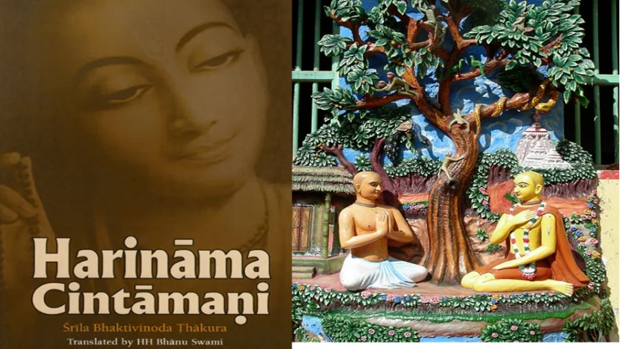
Okay, so last night we discussed about nāmābhāsa, and in nāmābhāsa there were two factors. One was ignorance, of four different types, like ignorance of jīva, ignorance of the Supreme Lord, ignorance of the name, ignorance of the process of bhakti, and there were, the other covering was anarthas, which also had four types, like material desires, and weakness of heart, three parts, and offences, aparādhas, nāmābhāsa, offences of four types, one of which was nāmāparādha.
So, ten chapters of this book Harinama Cintamani are dedicated to the ten aparādhas or the ten offences. So this is quite interesting and important for us because avoiding the nāmāparādhas is very important, and every morning actually we recite the aparādhas that we should avoid. But very little is explained about the importance of each aparādha. What are these aparādhas? Why are they called offences, etc.? So this work actually explains in quite a bit of detail each of the ten aparādhas. So in that sense, it is quite interesting for us and important for us to get this information.
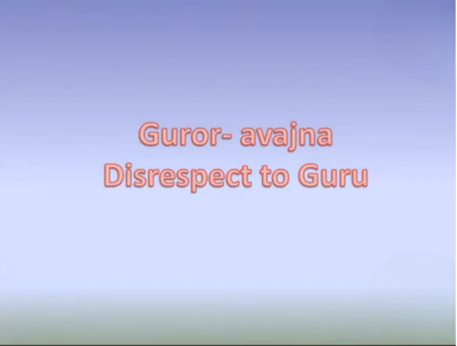
So, one of the aparādhas is sadhu-ninda, another is guruor-avajnā, both are concerning devotees. So sadhu-ninda, of course, is general, literally criticizing devotees, but of course it goes beyond criticizing, thinking badly of devotees or doing bad things to devotees also. So, somehow disrespecting devotees, that’s sadhu-ninda.
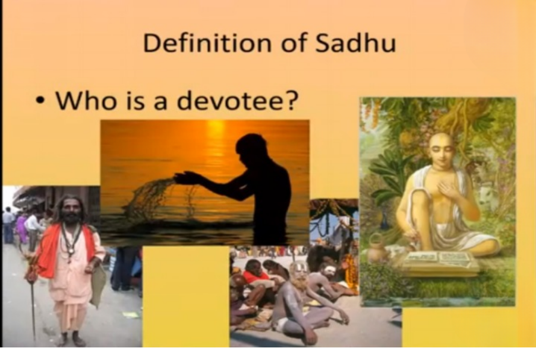
So who is a sadhu? So we can say that’s a devotee, but who’s a devotee? In the western world, well, it’s a Hare Krishna devotee, that’s a devotee. But in India, so many people are called devotees. They may be a devotee of Ganesh, or Durgadevi, or Shiva, or some devotee of some other guru, or whatever like that. So we’ve got all sorts of people who are called devotees. And if you go to like Kumbha Mela, so many devotees are there [Laughs], worshipping so many different things.
So who is a real devotee? So we do have scriptural description of the Vaishnava devotee, and that’s the one we’re talking about now. There are many qualities of this Vaishnava devotee. And we see the qualities mentioned in Caitanya Caritamrita, in Srimad Bhagavatam, and in Bhagavad Gita. But, the main quality is that person’s surrender to Krishna. That’s the main quality. There are many other qualities like peacefulness, tolerance, etc. But the main quality that has to be there is surrender to Krishna. The other qualities may or may not be there, but if the quality of surrender is there, then we have to accept the person as a devotee. A person may have all the other qualities, but if he has no surrender to Krishna, then we don’t accept him as sadhu or devotee.
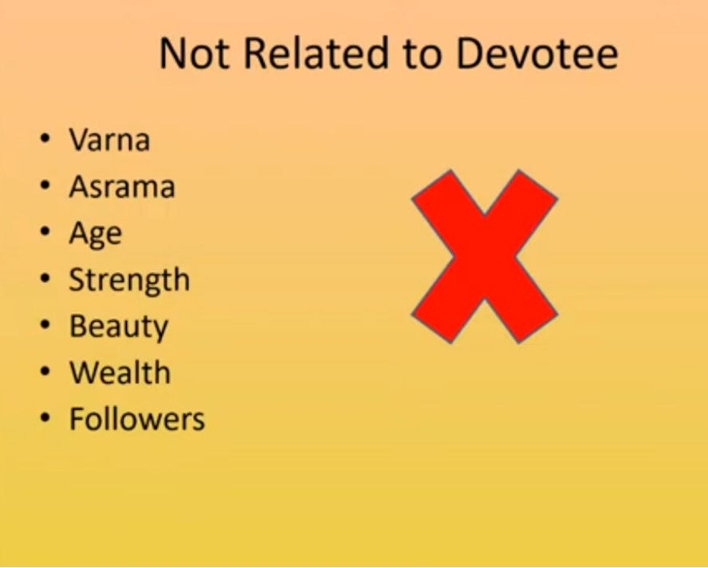
So, people, of course, may associate other qualities with a devotee, or judge a person as a greater devotee or a lesser devotee, based on other factors, not on the factor of surrender. So, we should not consider this. So, here’s the list that Bhaktivinoda Thakur gives. One is varna. So, a better devotee would be a better varna. So, in other words, if you come from a Brahmin family, you’re a better devotee, than if you come from a Sudra or a Mleccha family. That would be one thing, which is not proper. So, this is material. We don’t want to consider that when we’re judging devotees.
Another is ashram, which even we probably consider within ISKCON. In other words, we have sannyasis, and they’re considered to be best devotees, and we have grhasthas, not so good devotees [Laughs]. So, we judge based on the label, rather than the actual devotion. So, that’s also not good to categorize by ashram also.
We may do by age. This is also common. So, the older you are, the better you are [Laughs]. So, if you’re an older devotee, that means you’re a senior devotee, that means you’ve got more devotion. And if you’re a young devotee, you have less devotion. That could also, of course, be natural. The longer you practice bhakti, the better. But then some people join at an old age also, and they have only one year of experience [Laughs], so they’re not that advanced at all. And we have many people who may be in the movement many years, but they’re not very advanced. So, we can’t judge on age also. And we see, in Bhagavad-gita, that many of the devotees were very young. Dhruva was very young. Prahlada was very young. Great devotees. Sukadeva Goswami was young. So, age, not a consideration also. So, simply because a person is older, doesn’t mean they’re more advanced. Of course, that doesn’t mean we disrespect older people. Yeah, we have to give respect, but it’s got nothing to do with spiritual advancement.
Strength and health, etc., beauty, etc. So, if a person is healthy and whatever, which is better, if he’s got some problem with his body, then we may consider he’s not such a good devotee. Krishna’s not merciful to him, or something like that. So, we cannot consider these things also.
Wealth. Probably, in ISKCON we don’t consider wealth such a big thing. But nevertheless, there is a tendency to respect a person more because they have more money. So, that’s completely material. So, we can’t judge a person on that. Some devotees, of course, are very wealthy. Some devotees like Jagannath Das Babaji or Gaura-kisora dasa Babaji had no money at all, but they were great devotees. So, we can’t judge a person on wealth.
And, of course, followers. So, that may also be a consideration, even in ISKCON. Oh, this guru has more followers. He’s a better preacher. This one has two devotees of a following. Oh, he’s not such a powerful preacher like that. Not such a great devotee. So, we may judge like that. But that’s not also true. Gaura-kisora dasa Babaji didn’t have any disciples.He just had Bhakti-Siddhanta Saraswati thakur. But he’s a great devotee. So, we can’t judge by numbers, material estimation at all. So, none of these are related to the amount of devotion. And we have to be careful. Because if we do judge on this basis, then we make offense.
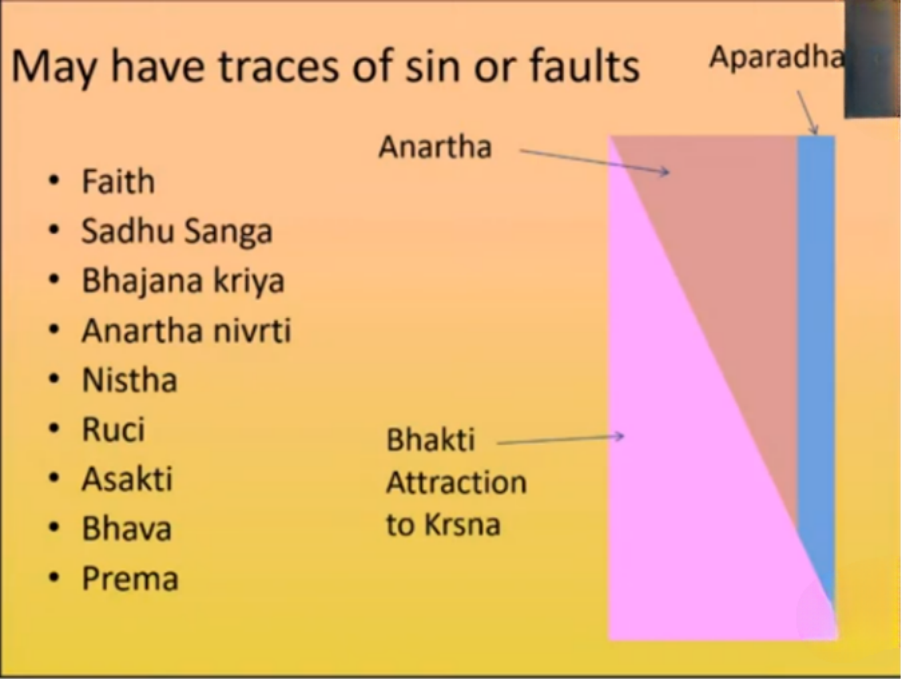
So, another problem is faults. So, we see faults in a devotee, and then we will criticize. So, there will be faults in a devotee. In the beginning, during bhajana kriya, during anartha vritti, during nishta, during ruchi, and asakti, and even in bhava stage. If you want, you can find faults. But we’re not supposed to be fault finders. We’re not looking for faults.
So, this diagram is here. We have the different stages, all the way to prema. So, through the process of bhakti, we have anartha nivritti, perceiving, and as the bhakti gets greater and greater, we go down here, the pink section is the amount of bhakti. And then the other is the decrease of the anarthas, the brown stage, like that. So, as you go, naturally, the faults are going to decrease.
So, we begin with a lot of faults, and as we progress, we get less and less faults. So, we should understand that devotees have faults, but if they’re practicing bhakti properly, we’ll tolerate those faults, because they get less and less as the person goes on. So, therefore, to simply criticize people because of this fault, that fault, that fault, whatever, is not proper.
In fact, in Bhagavad Gita, Krishna says, even if you’re the most sinful person, su-durācāraḥ , you’ve committed the worst sins, but you still perform bhakti, and you still have genuine faith, I consider you a devotee BG 9.30. So, even Krishna doesn’t mind the faults [Laughs]. Of course, you can’t have prema, with faults, and you can’t go to the spiritual world with faults, but still, Krishna has a little compassion. He understands, in the material world, we’re all going to have faults, and they may manifest while we’re doing bhakti. So, then, Krishna is tolerant. And devotees also have to be tolerant.
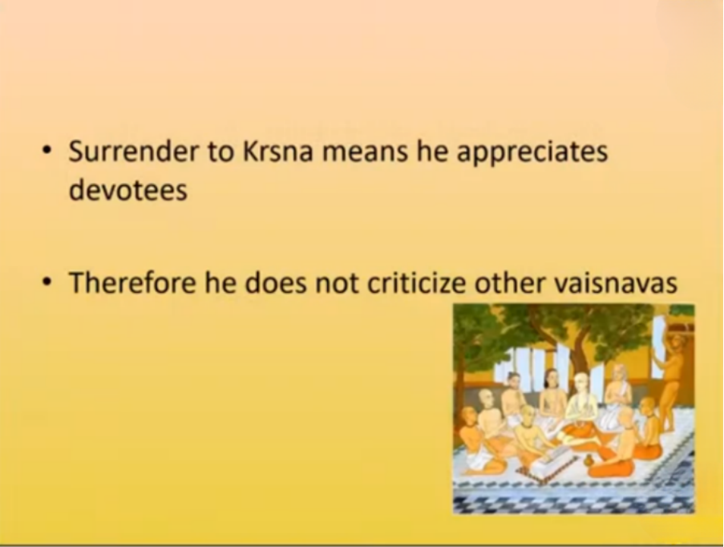
So, we measure the devotee’s status and progress by the amount of surrender to Krishna. That person who has surrendered to Krishna will also appreciate devotees and not criticize them [Laughs]. So, therefore, we can also understand advanced devotee because he doesn’t criticize other Vaishnavas. And he doesn’t look for the faults. So, the devotee is highly respected. And we see in Srimad Bhagavatam that, over and over, service to the devotee is one of the main angas of bhakti.
Sadhu Sangha is one of the five important angas in Nectar of devotion. Why? Because devotees are the cause of faith and the development of bhakti. Qualification is faith. We don’t preach to the faithless. So, you can only get preaching from a devotee if you have faith already. But where does faith come from? Trust and conviction in the scriptures like Bhagavad Gita. Where will that faith come from? It does not come from punya. Material, pious activities will not create that faith. And, if we don’t have faith, we’ll have no interest in bhakti.
So, then, how do we get the faith? So, the faith is due to the mercy of devotees who don’t preach [Laughs] because they don’t preach to the faithless. But, they’re intelligent enough to engage people that have no faith to expose them to bhakti somehow or other. And without their knowing, they get some advantage from that. Of course, it is not as much as the bhakti you’ll get after you have faith. And it’s only occasional because you kind of avoid devotees anyway. So, you get occasional contact with devotional service somehow or other. That starts influencing the jiva. And when you get enough of that influence, you develop faith. So, that is caused by devotees.
Devotees are the instrument of arranging so you get some exposure to bhakti. You may see a Jagannath Ratha Yatra and it is maybe the Rath interrupts your journey on your car [Laughs] and you get out and you see the Rath go by with Jagannath on it. So, that’s mercy of devotees and that influences the jiva. You may get prasadam and you’re hungry so you eat it. You don’t know it’s prasadam. But, it affects the jiva. You may even touch a book but not take it. But that will affect the jiva [Laughs]. So, so many things are there but it’s all arrangement of devotees. So, that will cause the faith.
After we get faith, we can become curious. Okay, I believe in some god or whatever. We’re searching around and then we meet a devotee who explains bhakti. We accept it and we get a book or whatever. So, the devotee is the cause of the faith and after we have the faith, the devotee is the person who guides us into the process of bhakti. So, that devotee is very, very important. Krishna could do this himself and sometimes he does inspire people when he comes as avatar. Or he comes as Lord Caitanya and he does that. But avatar is not there all the time. Avatar may be there for 20 years, 100 years, 120 years or whatever then he disappears. So, what happens for all the rest of the yugas? So, Krishna empowers devotees to spread the mercy on his behalf. So, that’s why the devotees are important. So, the spread of bhakti is mainly caused by devotees and we have to respect the devotee because he is the emissary of Supreme Lord.
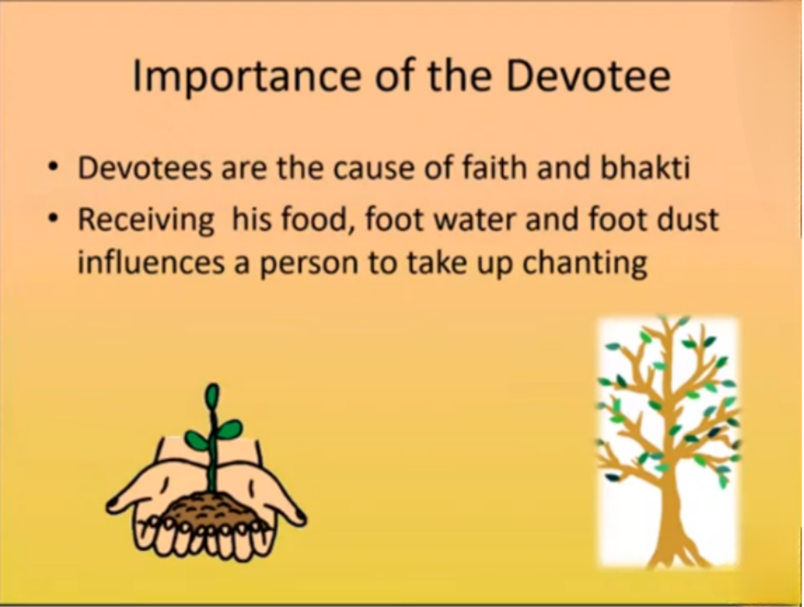
So, in Caitanya Caritamrita there it says you should receive the food that is the Mahamaha Prasadam of the devotee, the foot water that washes feet, the foot dust. You take that mercy and this will influence you to take up the chanting process and perform bhakti. In other words, association with the devotee is very, very important for spiritual advancement.
So, of course, Krishna is ultimately the most merciful but it’s that he doesn’t come all the time so he makes an arrangement by which his mercy is manifested in the world. How he does that? Through devotees. It may be guru or any devotee. He empowers that person to give out bhakti, to give out his own mercy and that will affect the jiva. So, it is through the devotees that bhakti spreads in this world. So, Krishna himself gives great honor to the devotees because they are doing his work for him. Ultimately, of course, it is Krishna just acting through the medium of devotees and the more transparent you are, the more pure you are, the more shakti you get from Krishna to distribute to others. But in any case, it’s devotees that distribute the Lord’s mercy and therefore they have to be respected.
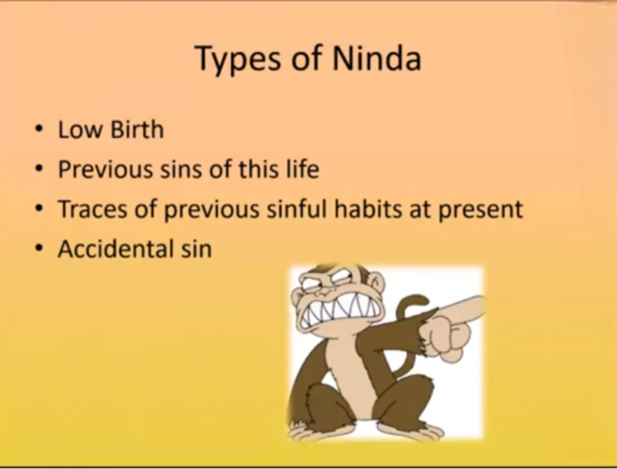
What are the types of ninda or criticism? We can criticize a devotee for low birth, low class person or whatever, comes from bad family or whatever, probably more in India than other places because they still have remnants of the varnas intact. But nevertheless, anybody can be criticized for low birth in any country of the world. England has high class, low class and all that. To raise that as a criticism, birth is completely wrong. It’s a type of ninda that’s not accepted. If a person commits sin in this lifetime and then becomes a devotee, we should not criticize the previous sin. We’re looking at the person at the present time, not what he did in the past. So if we start criticizing the person in his previous lifetime, that is also considered to be ninda, aparadha.
Traces of sinful habits at the present, as I said, we are going to have faults all along until we get into Bhava stage. So to unnecessarily criticize those things because they’re going to disappear later on, that’s considered to be ninda also. This doesn’t mean we’re trying to encourage people to do sins or have anger, lust and greed, etc. But at the same time, we don’t dwell on those things if it’s not a obstacle to the Bhakti. If it becomes an obstacle, then we have to, point it out to them.
Accidental sin. So a person is a devotee and then he may commit a sinful activity. And Krishna says, even if you committed the most sinful activity, you’re still my devotee. So Krishna doesn’t criticize that devotee. So, if a person does commit a sin but at the same time continues his devotional service seriously, we should not criticize that person. He did it, and it’s a mistake, but we don’t criticize because Krishna doesn’t criticize. And Krishna says sādhur eva sa mantavyaḥ, he must be respected as a devotee. So he’s giving an order to us [Laughs]. So, we don’t criticize for that. Of course, if he commits sin and he continues to commit sin and he stops his bhakti, that’s a different case. But if he continues his devotional service and he’s very sincere, then we should not criticize.
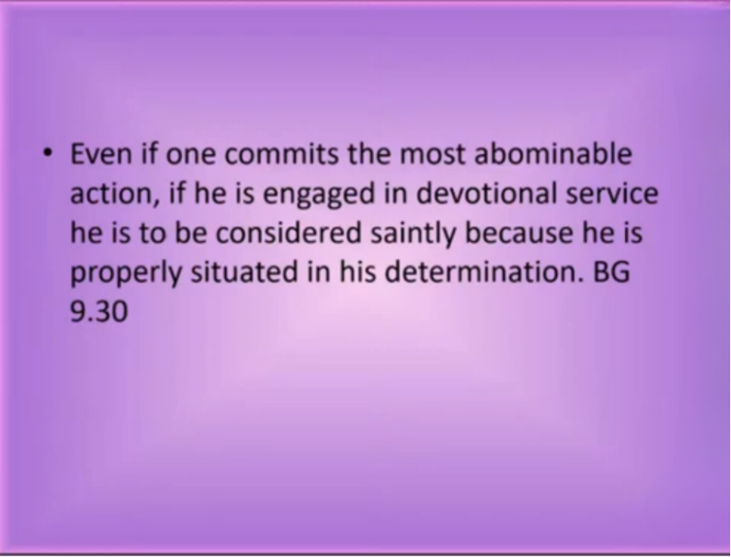
Okay actually, in Srila Vishvanatha Chakravarti’s commentary on Bhagavad Gita, he has a long commentary on this verse from the ninth chapter of Bhagavad Gita about the most abominable actions and whatever like that. Still, he’s considered sinful, but I don’t have time to go over that. But anyway, very interesting presentation of why you don’t criticize the devotee, even if he’s done sinful activity.
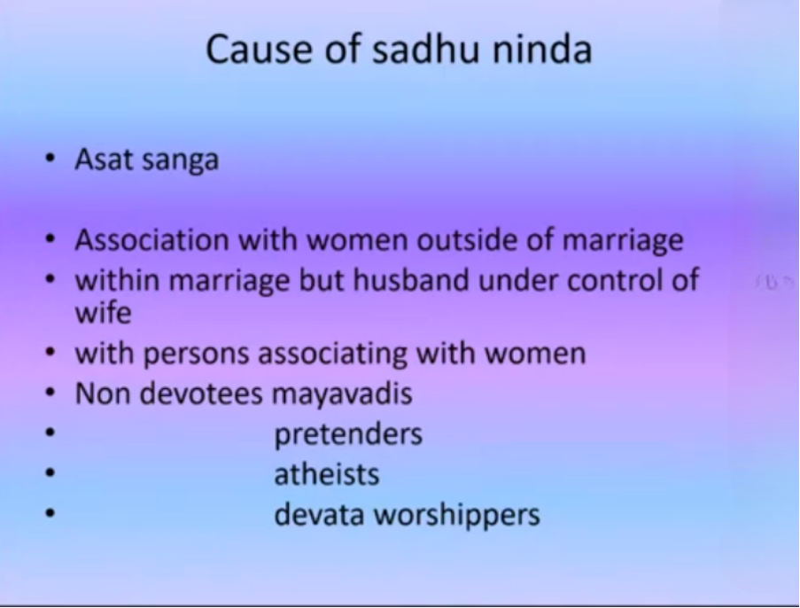
So, why would we criticize devotees? The main reason would be association with people, materialist people, or people who are not devotees and they can influence us. So, who is this asat, what is this asat person? So, Bhaktivinoda Thakur gives different definitions of that asat. So, a person who associates with women outside marriage, he is asat. Illicit activities, sexual activities, so we have to avoid that person. Of course, could be either way, men or women. Even the husband in the marriage, if he’s under the control of the wife and the wife is in the sense gratification, that’s considered a bad association also. So, if we associate with persons who are associating with women, that’s bad.
We have association with māyāvadis, people who offend the Lord by saying his form is illusory, that’s bad. People who pretend to be devotees or pretend to be very dharmic but actually are false, so we associate with those persons, again, it’s bad association. We associate with atheists, people who don’t believe in god, that’s also considered bad association and also people who worship devatas, that’s bad association. So all of that is going to influence us and then we may commit sadhu-ninda. So, that association is very, very powerful.
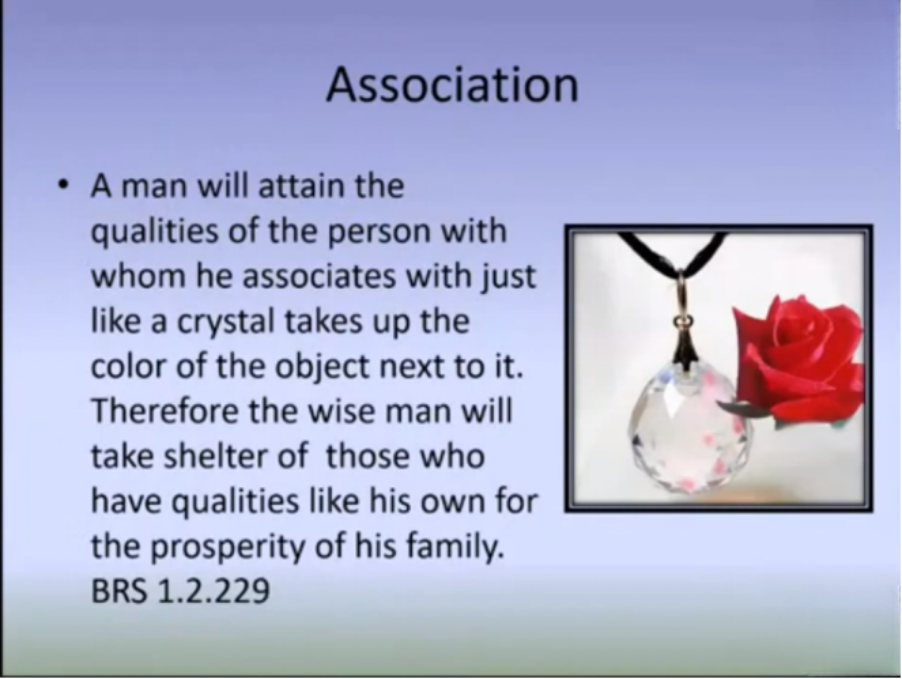
In Nectar of devotion, Rupa Goswami illustrates that by giving the example of spatika, which is crystal. It is clear, no particular color, it is clear, but if we put the crystal near a red flower, it looks red. If we put it near a blue flower, it will look blue. If we put it near a yellow flower, it will look yellow, so that crystal changes its color and its qualities according to its association. So, Rupa Goswami says people are like crystals [Laughs]. They go near one person, they become like that person. They go to that person, they become like that person. In other words, people are influenced by people a lot, and therefore we have to be careful of who we associate with. We associate with one type of person, Asat Sangha, we become Asat, we become impure. We associate with people, serious people, practicing bhakti, then we get serious bhakti. So, we have to choose very carefully our association. That’s a very good example to show the influence of association.
The example with the crystal, of course, is simply by being close to the red flower, the crystal becomes reddish. So, the association with people maybe is a little bit different because we cannot avoid coming close to all sorts of people who may be materialistic if you ride on a train or a bus or walk down a street, you’re associated with all sorts of people, not so good, but that’s not the association we’re talking about. The association which is dangerous is close association, which means we establish a very friendly relationship with that person. So, if we establish a very friendly relationship with an atheist or a māyāvadi or a person doing sinful activities, we’re more likely to pick up all the bad qualities. So, because of that friendly relationship, we start exchanging everything. We exchange food, we exchange ideas, we exchange everything, and then consequently we get influenced. So, therefore, association means establishing an intimate connection with another person in a friendly way, and we start exchanging things. That’s what this association does. So, that’s the powerful association which will cause problems for us.
Of course, contrary, we have in Nectar of Instruction, good association, sat-sangha.
So, what is good association? Exchanging food [Laughs], exchanging philosophy [Laughs], exchanging gifts with devotees. So, that’s good, positive. We establish friendly relationships, and this nourishes our devotional service. So, therefore, association is very good, and if we associate with materialists, etc., they are likely to criticize devotees, and we pick up that criticism, we start criticizing devotees, so, not good.
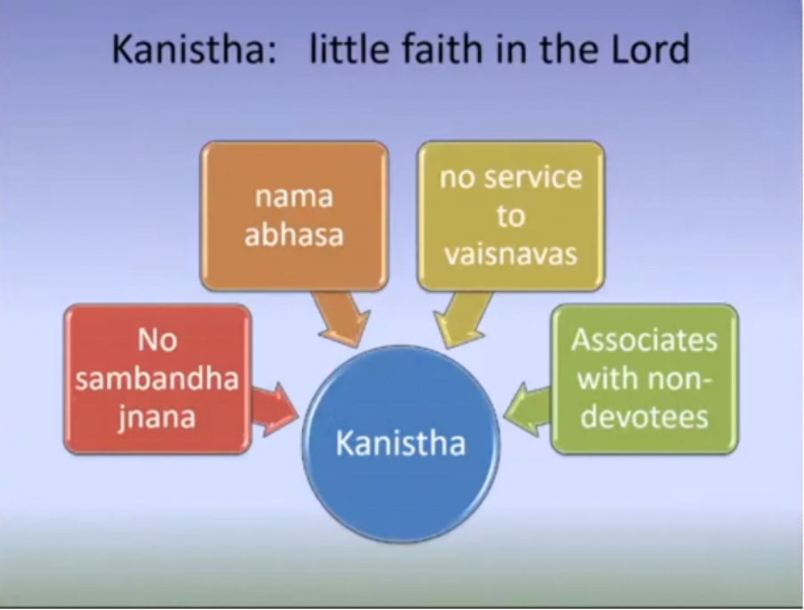
So, in Srimad Bhagavatam, there is a classification of devotees into three categories. The Kanistha, or the junior, who has little faith in the Lord. But, no knowledge. Yesterday, we talked about Sambandha-jñāna, by which you can practice pure bhakti. He doesn’t have that. Doesn’t associate with devotees, so, therefore, obviously, he’s not going to get much knowledge. Consequently, his chanting, if he’s chanting, is nāmābhāsa. He’s chanting consciously, but doesn’t quite know what he’s doing [Laughs]. And, probably, mixed with material desires. And, this person does not associate with devotees, does no service to the Vaishnavas, so doesn’t really respect them. This is not a good position to be in. It’s a risky position. So, this is also called Vaishnava praya. Almost a Vaishnava, not a real devotee midway. A good point, of course, is, at least he worships the Supreme Lord in the deity form, that’s all. But, he doesn’t associate with devotees, so that’s the bad point.
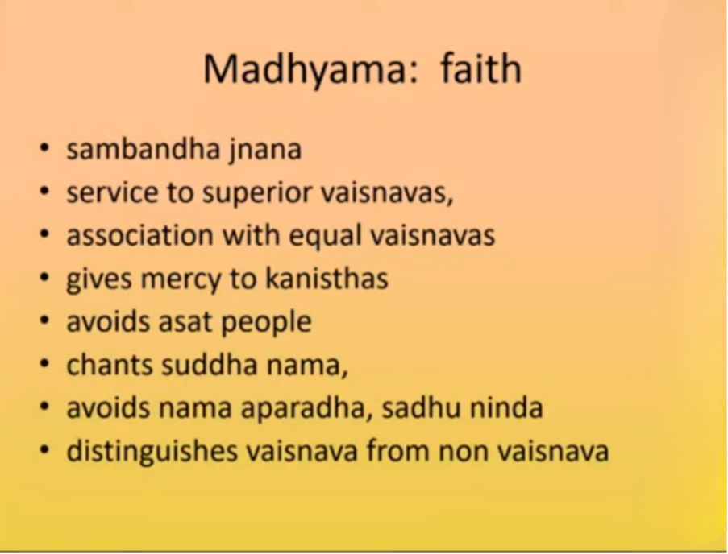
Second category is the Madhyama devotee. So, he has faith in the Lord, he associates with devotees, and he serves devotees, he gets Sambandha-jñāna, so he knows the philosophy nicely. He actually serves those who are superior devotees, associates with equal devotees, he gives mercy to the Kanisthas, those who have a little faith but not much knowledge. So, he is the one that delivers the Kanisthas. He avoids the Asat people, and that way he avoids aparadhas. And, therefore, he comes to the level of Suddhanam, pure chanting. He avoids, of course, criticizing devotees, but he distinguishes devotees from non-devotees, and does not preach to the faithless people.
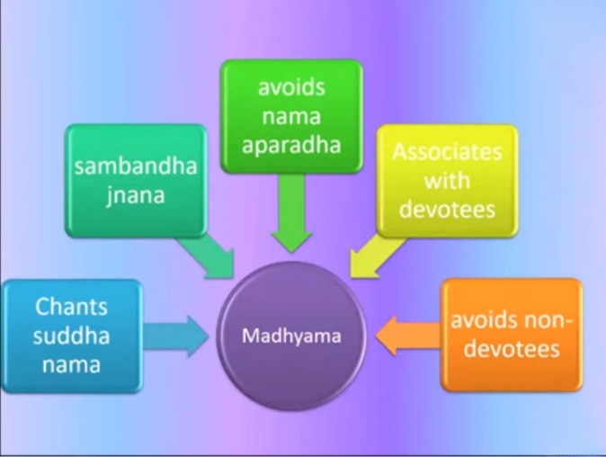
So, this is a very positive stage. He avoids the non-devotees, associates with devotees, gets proper knowledge, chants Suddha-nama, avoids non-devotees. So, the Madhyama devotee is one practicing pure bhakti, Suddha bhakti. And, he can advance very nicely in devotional service. So, this is the stage we should all be at [Laughs]. So, Srila Prabhupada, of course, provides the means. He gives us a society where we can associate with devotees, he gives us the books and knowledge. So, we have plenty of opportunity.
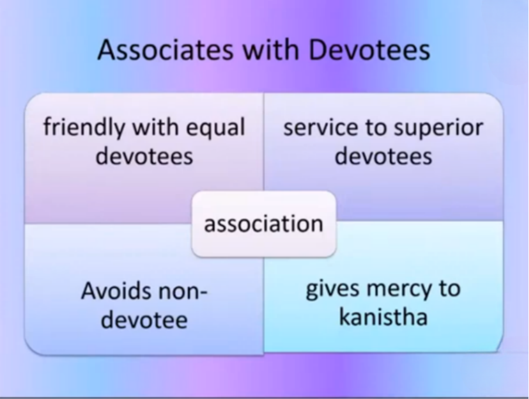
So, what is his association? He avoids the non-devotee, Asat Sanga, he avoids that, Asat association. He associates with devotees, good. He serves the superior devotee and he gives mercy to the Kanisthas, those who are innocent but don’t know anything. So, this is a very good stage.
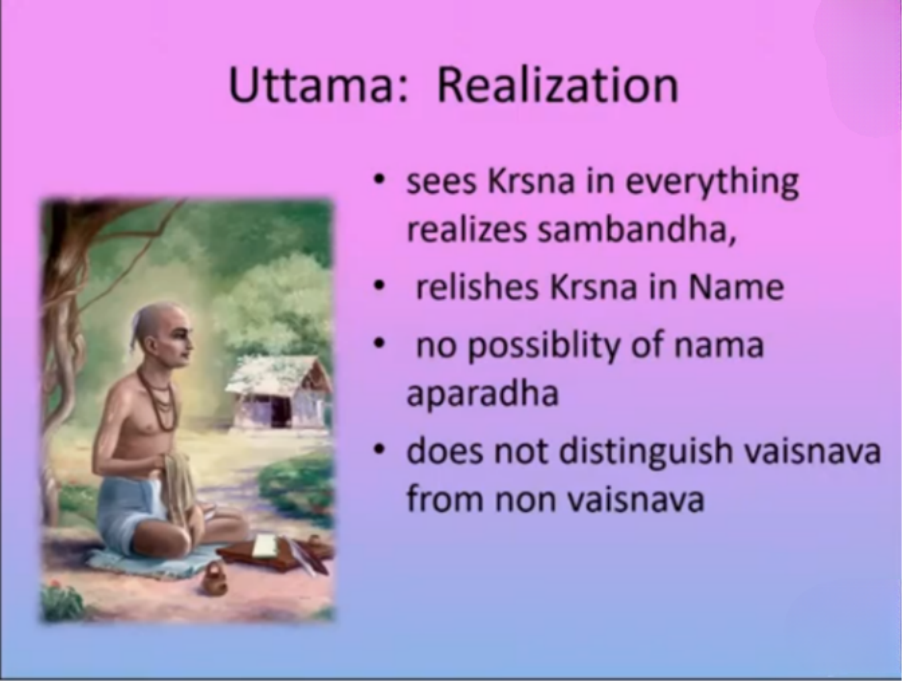
The third type of devotee described in Bhagavatam is called the Uttama. He is one who has realized Krishna. He may be in Bhava or Prema. So, he’s realized Sambandha-jñāna , he’s realized this is the supreme lord, etc. And he is constantly relishing the name of Krishna, understands Krishna is non different from his name. And there’s no possibility of namaparadhas for this devotee because he understands the position of the devotee as a person empowered by supreme lord. He does not distinguish between the Vaishnava and the non-Vaishnava. The Madhyama does. He avoids the non-devotee. He says, this is a devotee, non-devotee, I don’t preach to him, I don’t associate with the non-devotee. Uttama, everybody is a devotee. He makes no distinction. Thus, he doesn’t preach. So, then, this is of course the summary of all this.
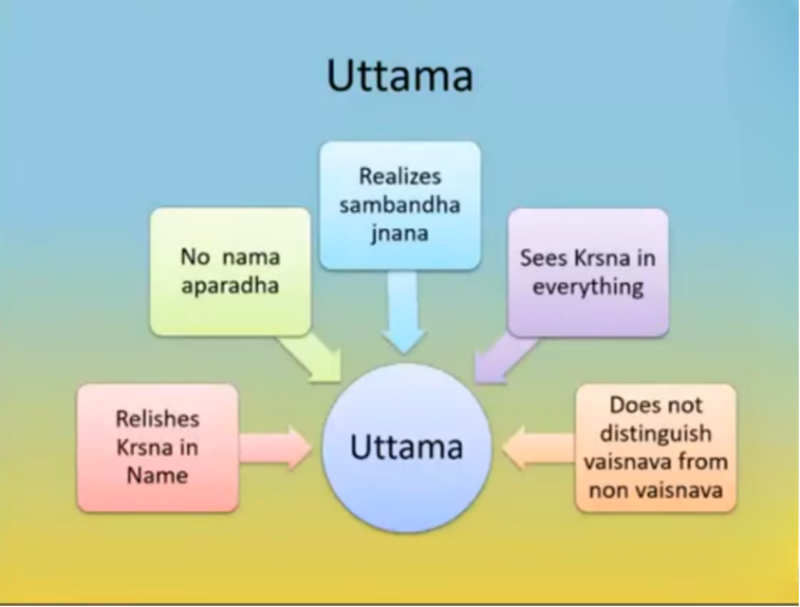
What is this Uttama adhikari? He doesn’t preach, he doesn’t look like a devotee, he doesn’t preach, that’s what we think, but he’s completely absorbed in Krishna. And he sees Krishna everywhere, in the trees, in the asuras, everywhere. Krishna is everywhere. It’s something like the gopis in Vrindavan.
The most advanced devotee sees within everything the soul of all souls, the Supreme Personality of Godhead, Śrī Kṛṣṇa. Consequently he sees everything in relation to the Supreme Lord and understands that everything that exists is eternally situated within the Lord. SB 11.2.45
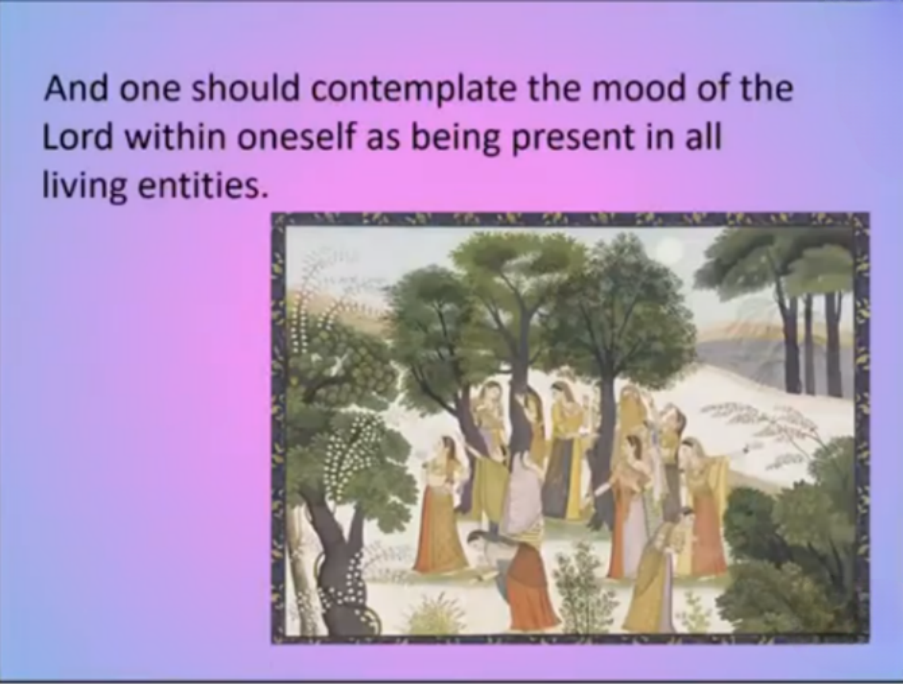
This is, explaining this in 11th canto, most advanced devotees see Supreme Lord, object of worship, within everything, he sees everything in Supreme Lord. It’s not like, you know, everything is one, which is like the impersonal concept, it’s like the gopis. So they see Krishna operating and giving mercy to the trees and the waves of the river and the deer, etc. They see the mercy of Krishna everywhere, everybody is a devotee. So that’s actually the conception of the Uttama person. So that person, of course, is very advanced in devotion. That’s just from 10th canto, to show, the ecstasy of one in Prema, and he doesn’t see differences so much.
The question will come, of course, then, well, we want to get mercy of the highest devotees, but then the Uttamas aren’t available because they don’t give mercy, and of course the Uttamas are very rare. So then, how do we get mercy? Well, therefore, it is the Madhyamas who give the mercy. They’re the main mediums of Krishna’s mercy in the material world, that is the Madhyama devotees. They’re not as advanced as the Uttama, but they are the ones who are preaching, they’re the ones that are more available, more common, and they’re the ones that are preaching to the Kanisthas, etc. So these are the ones who act as the medium of mercy of Krishna, mainly the Madhyamas.
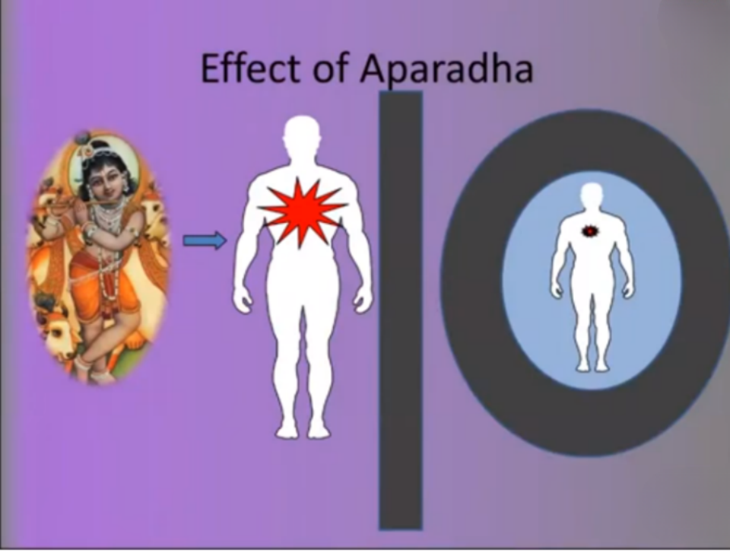
So, if we commit sadhu-ninda due to some fault of our own or due to bad association, what do we do? We have to repent, we have to feel regretful for criticizing the devotee, and we have to go to the devotee and ask for forgiveness. So that’s the procedure for nullifying the aparadha. This aparadha, of course, is called the mad elephant offense. So among all the offenses, this is considered very, very serious. So, the mad elephants, of course, are big, but the mad elephants are irrational. So, he can go anywhere and simply destroy everything. So, that’s what the mad elephant does. He goes into the garden or goes into the farm and smashes everything [Laughs]. So, this is what the Vaisnava aparadha can do. It can smash your bhakti. We have a little creeper of bhakti growing up and we’re taking care of the little plant and making it grow a little bit and we get leaves and more leaves and then the big elephant comes along and squishes it. That’s the Vaisnava aparadha. So, that will happen if the aparadha is serious, which means the aparadha is very intentional, that we do have envy or hatred without cause for another devotee and then we do something. So, that becomes serious.
We have accidental aparadha, somehow somebody gets offended, we didn’t even know, but they become offended for somebody. So, that is minor effect, but some effect, but not so serious, but when it’s intentional on our part, then it becomes serious.
So, related to this is another aparadha, Guror Avajna. So, Guru is also a devotee, so it’s basically similar, but Guru has a special position as a devotee. So, he’s a devotee, a sadhu and we can’t disrespect or criticize, but it’s also serious because we have to give great respect to one who is Guru. So, two functions of Guru, they may function within one person or they may be in several persons. So, one is to give mantra, not Hare Krishna mantra, but 18-syllable Krishna mantra, which we get at second initiation. So, that becomes the Diksha mantra. If you get that mantra, you get Diksha. You don’t get the mantra, no Diksha. So, you’re not qualified to worship the deity. So, that is technically what Diksha is, getting that mantra for deity worship mainly.
The other function of Guru is to give knowledge or Siksha, teachings. And the rule is you take one Diksha Guru, in other words, you only get mantra once, but you can have many teachers who give you knowledge. So, you can have many Siksha Gurus and one Diksha Guru. Sometimes, of course, in many cases, the Diksha Guru is also giving knowledge, so he is also Siksha Guru. But, you could also get Siksha from another person, other than your Diksha Guru. Qualification for both is the same, Siksha or Diksha. And, of course, they have to be worshipped equally. So, we don’t put the Diksha Guru in a greater position than the Siksha Guru. Equal, equal. This is emphasized in Caitanya Caritamrita . So, what is the qualification? Surrender to Krishna. That was the quality of a devotee, surrender to Krishna.
So, if a person is surrendered to Krishna genuinely and has proven that by his acts of devotion over and over again and then he is qualified as a Guru. It doesn’t matter what is his Varna or Ashrama or all these other considerations of followers, wealth, etc. That’s not the consideration here. The only consideration as far as Ashrama is concerned, if you’re taking Sannyasa, then you have to take a Sannyasi as a Guru [Laughs]. Not a householder for taking Sannyasa.
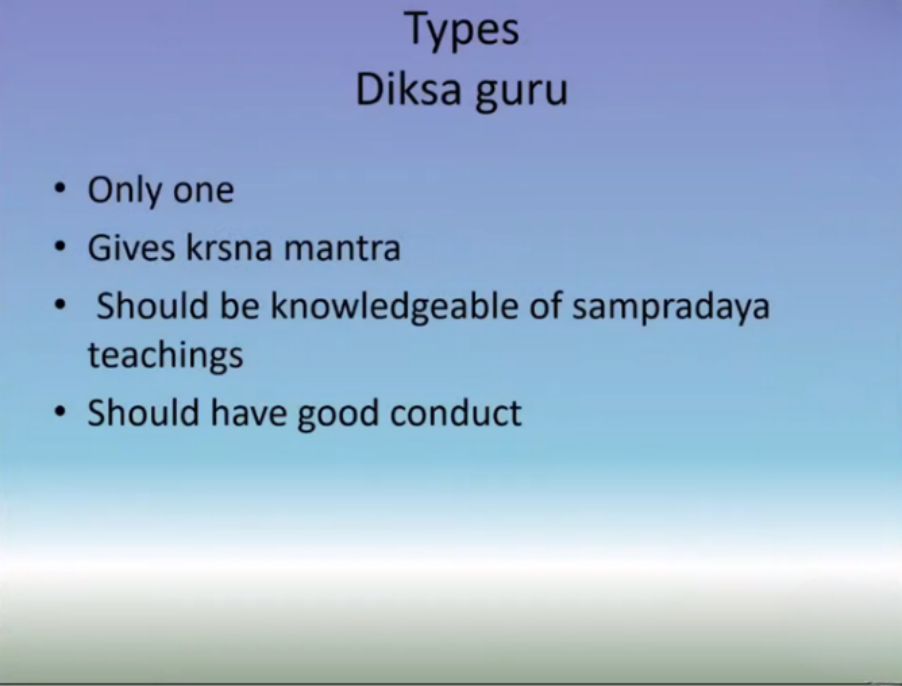
So, the Diksha Guru. One, one Diksha Guru who gives mantra. In our case, it will be Krishna and Gauranga mantras. Other Sampradayas will give other mantras for Vishnu or whatever. The idea, of course, for Diksha Guru is that we should not divert our minds too much and concentrate on one deity rather than many deities. So we don’t go shopping for different Diksha Gurus to get different mantras to worship all sorts of different deities. Rather we stick to Krishna, Radha, Krishna and Gauranga, finished. We don’t try to go out to get other Gurus with other mantras for other types of worship. So, that Diksha Guru should have qualification of surrender to Krishna, should have knowledge of our teachings, obviously, and should have proper conduct.
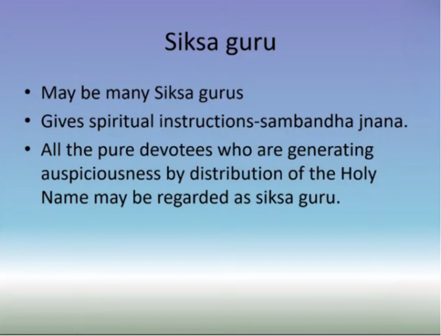
Siksha Guru. We have many Siksha Gurus. So, he should also have knowledge, have proper conduct, etc. So, he gives his main subject is not giving mantra but spiritual instructions. Sambandha-Jñāna , not only Sambandha-Jñāna but Bhakti and even Prayojana. He gives the instructions on Sambandha, Abhidheya, Prayojana. So, Bhaktivinoda Thakur says, all the pure devotees who are generating auspiciousness by distributing the holy name may be regarded as Siksha Gurus. So, all the preachers in one sense are Siksha Gurus. However, usually when we talk about Siksha Guru, we have a more specialized person, not only he’s just preaching but we may have a special relationship with that devotee and he gives us more knowledge than all the other devotees who are giving us knowledge. So, and then we have attraction to that person and we give more respect to him. So, that’s a more specialized Siksha Guru.
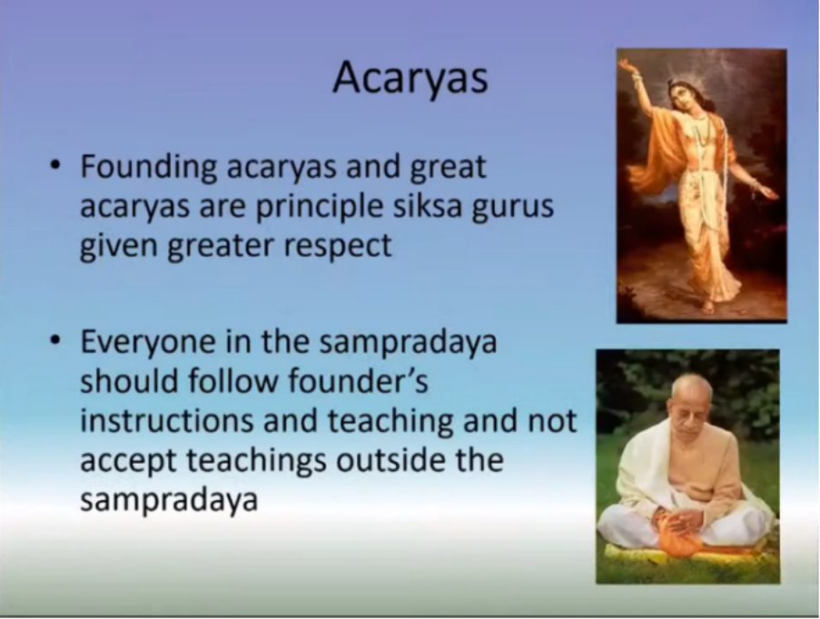
We also have founders. So, of course we have founders of our Gaudiya Sampradaya and then we have within ISKCON, we have Prabhupada as our founding Acharya. So, they’re also Siksha Gurus even though they’re not personally present and we have to give them greater respect. So, respect is given equally to Diksha and Siksha Guru but even there among that we have many Siksha Gurus, we can give more respect to the Guru who’s more advanced and gives more instructions, natural.
And, we give more respect to the founder [Laughs]. So, therefore we give more respect to Srila Prabhupada and we give respect to all the Gurus maybe thereafter that. So, therefore, we have levels of respect for Gurus also according to their advancement. In Krishna Bhajanamrta, Narahari Thakur says, gives the example of how devotion is not one track because many devotees will say, well, I cannot divide my devotion, I’ll only be devoted, I’ll be devoted to my Diksha Guru and nobody else. But, then he says, Narahari says, in a family we give respect, the child gives respect to the father and mother. But, he also gives respect to the brothers of the father, that’s your uncles, he gives equal respect to the father’s brothers. So, he’s got not just one object of devotion, if you have three brothers, you have three objects of devotion also. And, you give respect to all those brothers. And, he also says, and you give double respect to the grandfather [Laughs].
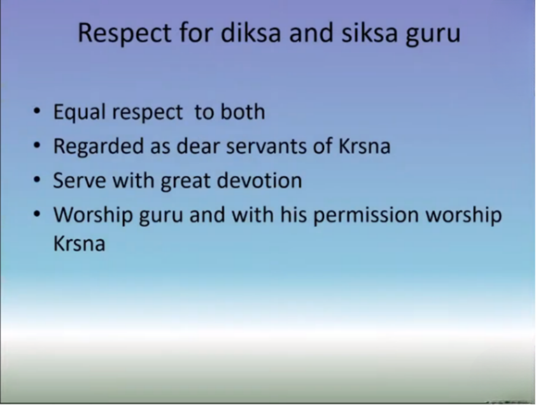
So, we have all sorts of respect there in the family, that’s material situation of course. So, in devotion also, we give respect to Siksha Guru, Diksha Guru and then we give respect according to advancement of those Gurus and we also give greater respect to the founder, who’s like the grandfather, great grandfather Guru like that. So, we have respect given to all these persons. Of course, then we’re also giving respect to Krishna [Laughs]. So, we’re giving many types of respect to different personalities. So, it’s not just one object of respect, we’re automatically giving respect to many persons. So, but there is hierarchy.
So, in Caitanya Caritamrta, there it says, equal respect for Siksha and Diksha Guru and they’re both considered dear servants of the Lord. We serve them with great devotion, worship Guru with his permission, we worship Krishna. So, in deity worship procedure is there that before you worship Krishna, then you have to worship Guru. So, that’s why we have Guru pictures in the altar and when they do their worship behind the curtains, then they worship Guru, then they worship Caitanya and they worship Krishna. So, that’s the general procedure.
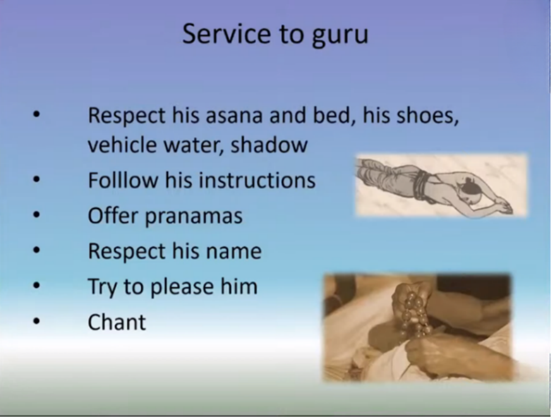
So, how do we do service to Guru? Give respect to him if he’s present physically, then we give respect to him but we respect his seat or his bed, his shoes, vehicle, water, shadow, don’t step on his shadow [Laughs]. Follow his instructions, even more important than direct service is following the instructions and that’s exactly what Prabhupada did. He didn’t get much personal association with Bhaktisiddhanta Saraswati Thakur but he followed his instruction [Laughs] and that’s what he emphasized. I followed his instruction, therefore I was able to preach around the world, we should offer respects and prayers, etc. to the Guru, treat his name with respect and try to please him and of course we’re always chanting the holy name, engaging in devotional service. So, that’s how we serve Guru.
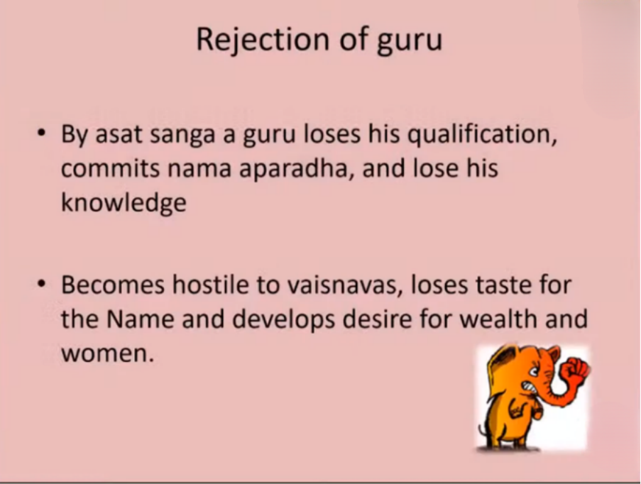
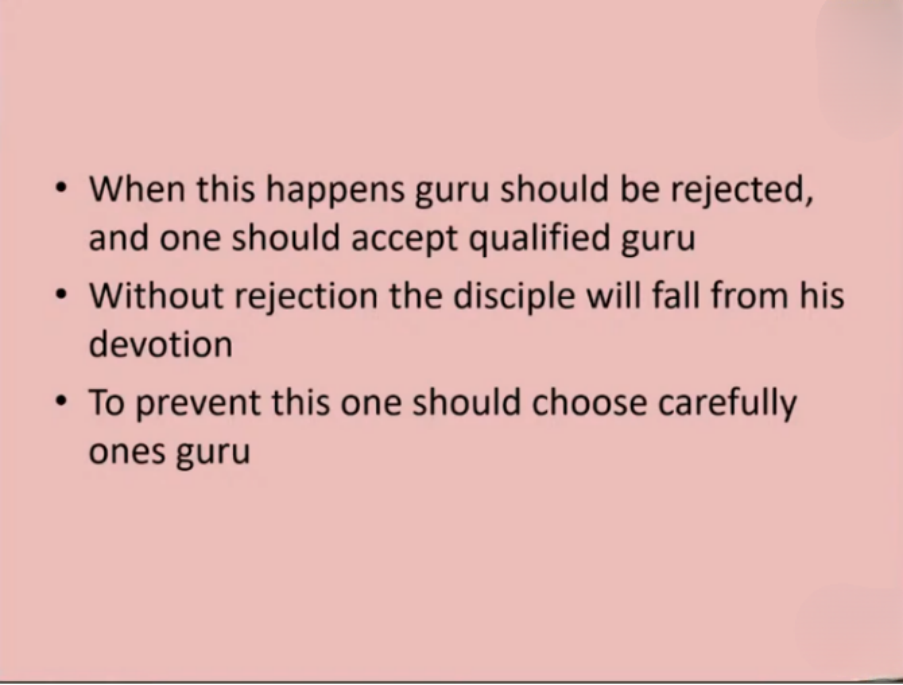
Bhaktivinoda Thakur also mentions rejection of Guru. Generally, we don’t reject Guru but there are cases where we have to and that case is where the Guru by Asat-sanga loses qualification and he’s no longer practicing bhakti, he no longer has faith in the name of the Supreme Lord, commits Vaishnava aparadha, Nama aparadha, etc. and loses all of his knowledge. So, therefore, if we keep the connection with that person in a fallen state, we also get fallen. It’s an association [Laughs]. So, we have to break that connection with such a person who has fallen because otherwise we get influenced. So, we should reject that type of Guru. So, therefore, to prevent such a thing happening, we have to choose Guru very carefully. And this will help us prevent choosing a Guru who later falls or whatever. Which means we do have to carefully observe that particular devotee. We also have to know scripture to know who is qualified to be Guru. And then, if we’re very careful, then we choose Guru and it will help prevent such unfortunate situations where we get a Guru who falls later and we have to reject him.
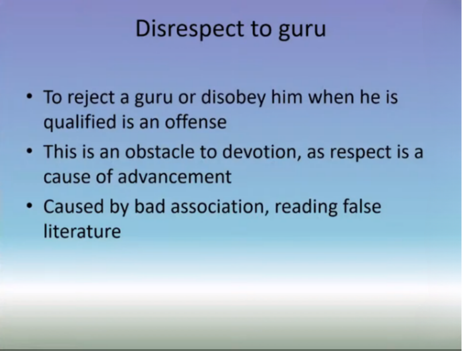
So, if the Guru does not commit aparadhas or offenses or loses faith, etc., if we reject or disobey him, that’s an offense. So, to reject a Guru who is qualified that we’ve already accepted, that will be aparadha. So, this will create great obstacle to our devotion and will be very difficult for us to advance. So, such a situation will be caused by bad association, reading false literature, etc., whatever.
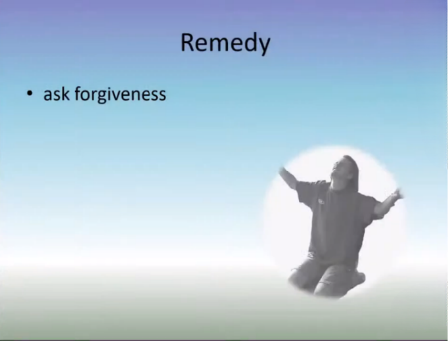
So, as in the previous case, then we have to recognize our fault, feel regret, repentence and ask for forgiveness.
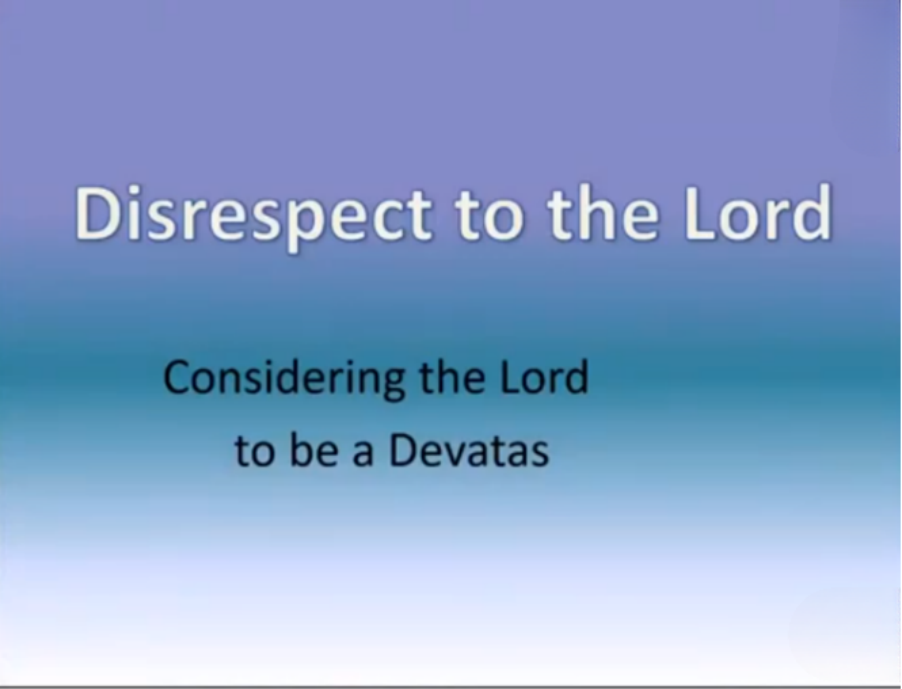
Okay, so, another offense is to consider the names of the demigods like Shiva or Brahma to be equal to the name of the Lord. And, of course, this also implies that we consider Devatas equal to the Supreme Lord. So, this, of course, is not just an offense to the name, but it’s also an offense to the Supreme Lord himself. I think the Lord is just like a Devata. And one of the problems with this ignorance we found was that, yeah, we may worship Krishna, but we think of him as a Devata. So, that’s bad knowledge which causes nāmābhāsa .
And if it’s very deliberate, it becomes like the māyāvadis, it becomes Pratibimba nāmābhāsa , which is actually aparadha. So, we have to be very careful of this. Of course, in ISKCON, Srila Prabhupada has made it very clear the distinction between Devatas and Supreme Lord in very basic works like Bhagavad Gita, etc. So, most devotees are not going to have any confusion here. But, it is a cause of confusion for people who are not devotees and are just like Hindus. They consider everybody equal. So, that’s, by this knowledge, we can correct this aparadha.
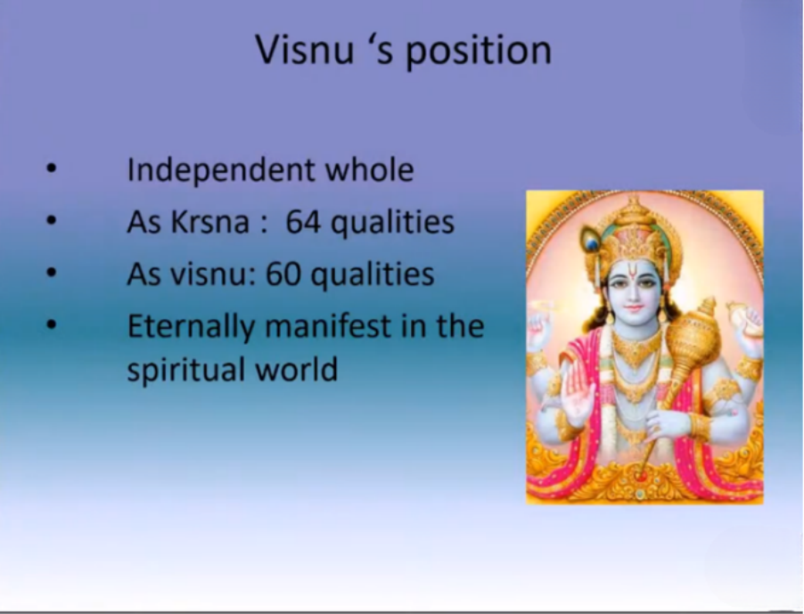
So, in our scriptures, we have the position of Vishnu and Krishna clearly defined. So, Supreme Lord is the independent whole. He is the highest person. Nobody is above him and everyone is below him. So, everyone is dependent on the Supreme Lord. Within Gaudiya Sampradaya, we have a further distinction. Yes, Vishnu and Krishna philosophically are the same. They are one. But, nevertheless, we say Krishna is superior [Laughs]. Even though they are one, Krishna is superior. Why? Because he manifests more qualities more completely, 64 qualities and Vishnu manifests 60 qualities. So, we make a distinction and so, we call Krishna svayam Bhagavan. So, we don’t say, yeah, we can worship Krishna instead of everybody, that’s all equal. But, we don’t say that [Laughs]. Krishna is superior. Therefore, we concentrate on Krishna. So, we should not take this in a fanatical way. People may say, oh, you’re always just worshipping Krishna, you’re rejecting everybody else. That’s very fanatical. So, we should give a reason. So, this is the reason. Krishna is at the top, because he manifests these qualities, which Visnu does not manifest. Essentially, these qualities are qualities of sweetness. Vishnu manifests majesty. Krishna manifests sweetness. Such as Vatsalya rasa, Madhurya rasa, etc. And Vishnu does not manifest that so much. Furthermore, Krishna’s Madhurya and Vatsalya and Sakhya is very intimate. And, the devotees do not see Krishna as God at all. So, the reverence is completely missing with Krishna. So, that makes six of four qualities, which are especially sweet in Krishna. His pastimes become sweet, his form is sweet, his devotees are sweet, and he plays the sweet flute [Laughs]. So, these are four extra qualities. So, we don’t see that in Vishnu. He’s not playing the flute, he’s not having rasa lila, he’s not having damodara lila, etc. So, Krishna is very special. So, for us, we should distinguish this and make it clear. It’s not fanaticism, I’m saying. It’s simply because Krishna manifests more qualities, that’s all. In any case, both are in supreme position. And, people of other Sampradayas, they can worship Vishnu, and we’re not going to oppose that also, they’re free to do that, because it’s also a form of the Lord. But, if we’re exposed to Krishna, if we’re attracted to Krishna, then worship Krishna, and appreciate his sweet qualities.
So, these forms, these forms of the Lord, are spiritual. They have particular forms, but they’re not material, and they’re not limited. They exist eternally in the spiritual world, and they’re beyond all limitations. So, there’s no criticism, because they have form, therefore limited. Form they have, but unlimited.
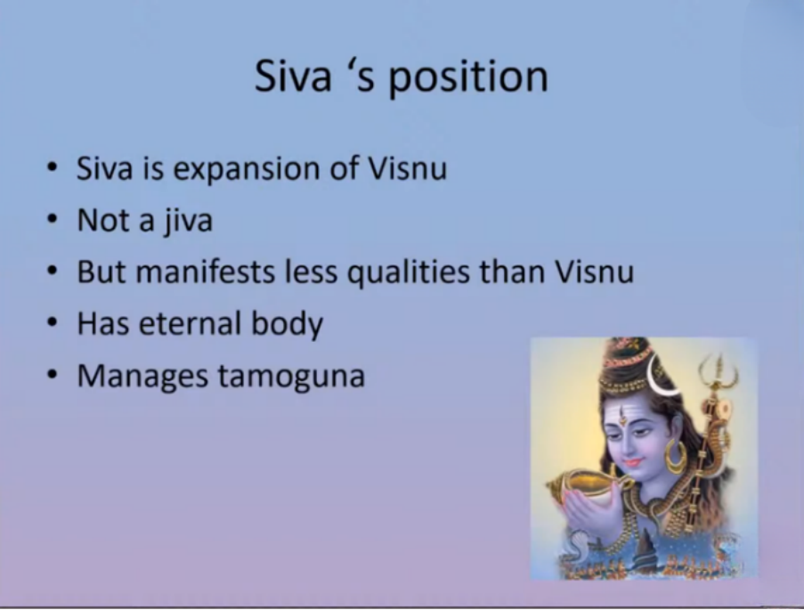
So, Shiva is in, like Vishnu, similar, but, and he’s called a form of Vishnu, but slightly different, because we see here, Krishna has 64 qualities, Vishnu has 60 qualities, and Shiva manifests only five minus, 55 qualities. So, there’s significant difference. So, therefore, we put Shiva in a different category, even though he’s a form of Vishnu. And, of course, one of his qualities is that he manages material world with tamo-guṇa. He’s in charge of false ego, so he gets the bad jobs, in one sense [Laughs]. In charge of tamo-guṇa, false ego, and things like that. Anger, lust, and greed, they’re all under Shiva, in the material world.
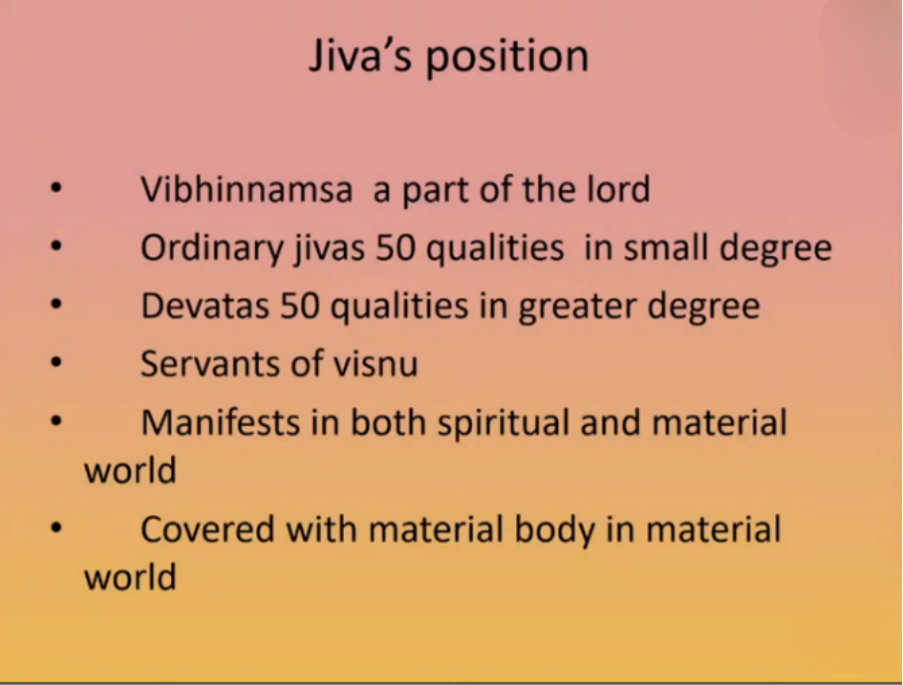
So, apart from that, we have Jivas, and we distinguish Jiva from Supreme Lord. Jivas can get up to 50 of the qualities that Krishna has. So, Jivas are less than Shiva, less than Vishnu, less than Krishna. But, even then, if they get 50 qualities, little bit, not full like Krishna, or even Shiva. So, the Devatas can attain these 50 qualities more than the other Jivas. So, they get a higher position in the material world. All of the Jivas are ultimately servants of the Supreme Lord. The Jivas can manifest in the spiritual world, or if they’re in māyā , they’re in the material world. And, if they’re in the material world, they get a material body, which is subject to destruction. In the spiritual world, we have eternal bodies. So, this, the Tattva of Jiva, and Shiva, and Vishnu, and Krishna, should be clearly understood by the devotees, and then they won’t make any aparadhas.
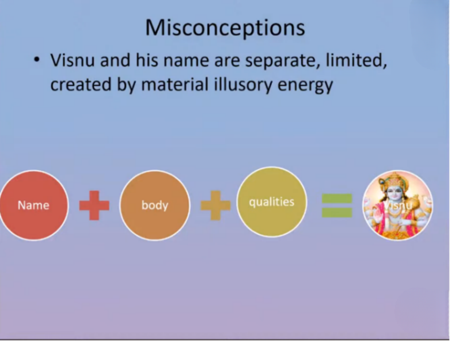
So, there are a lot of misconceptions. We may think that Vishnu, or Krishna, and His name are separate. They’re different. We say, non-different. We chant Hare Krishna, we can realize Krishna. They’re the same. But, other people will say, no, name is material, the Lord is spiritual, so they’re different. So, that’s the type of misconception. We may think that the name is, because it is sound, is material, and limited. We may also think that even Vishnu, He has a form, therefore he’s material, and limited. So, all of this is actually offensive. So, this becomes a philosophy also. So, the māyāvadis, the followers of Shankaracharya, will say, yes, we like Vishnu, but He has a material body, in sattva-guṇa. So, we worship Him, because we like sattva-guṇa. If we want liberation, we have to give up Vishnu, because He’s material. So, this is a philosophy that has been built into some aparadha, saying Vishnu has a material body. So, therefore, we have to avoid that.
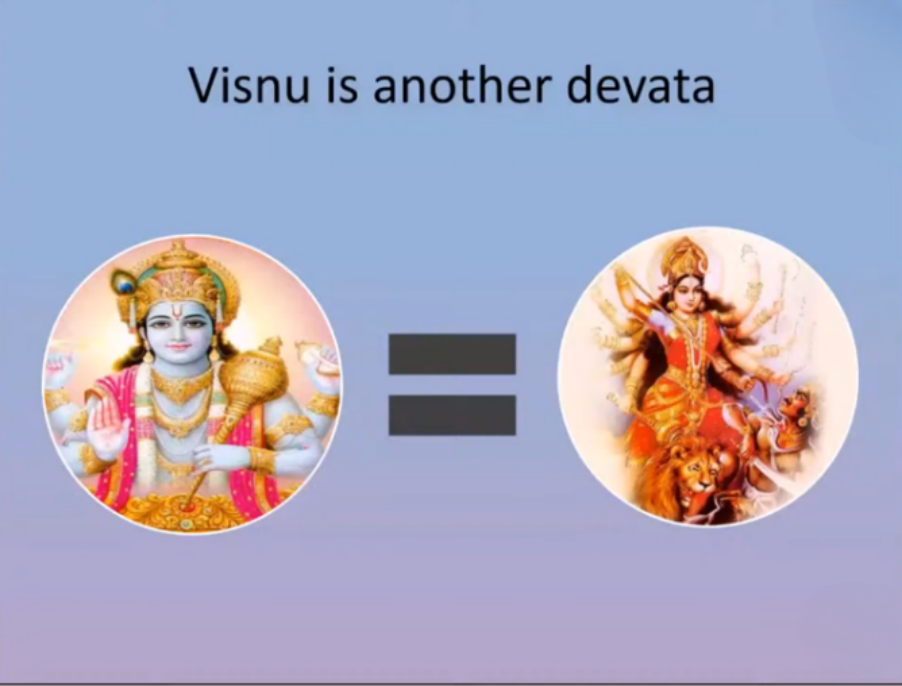
So, many people will think, okay, we have all these Devatas and whatever, and we worship everybody in India, so Vishnu is like everybody else. So, we worship Shiva, and Ganesh, and Kartikeya, and Durga Devi, and we also worship Vishnu and Krishna, and they’re all equal [Laughs]. So, this is also a misconception.
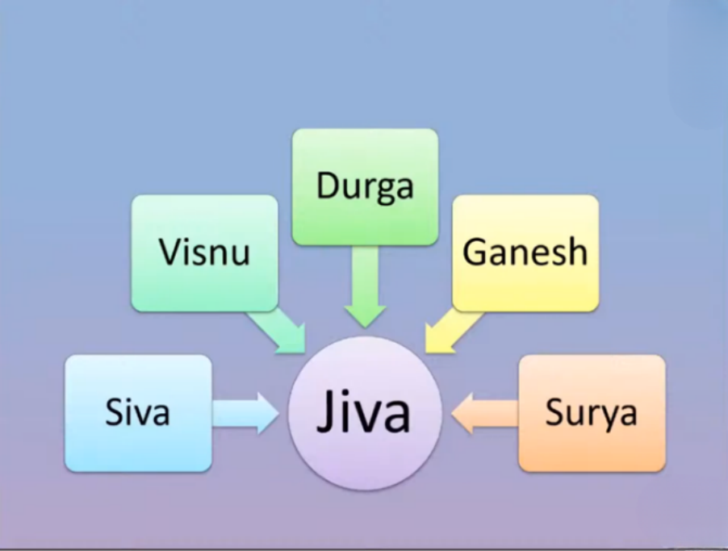
Of course, we’re putting Vishnu on the same level as the Devatas, and we think everybody is a Jiva, but they’re better than us, so we have a level up here of Jivas, and we’re down here, so we worship them, but we put them all on the same level.
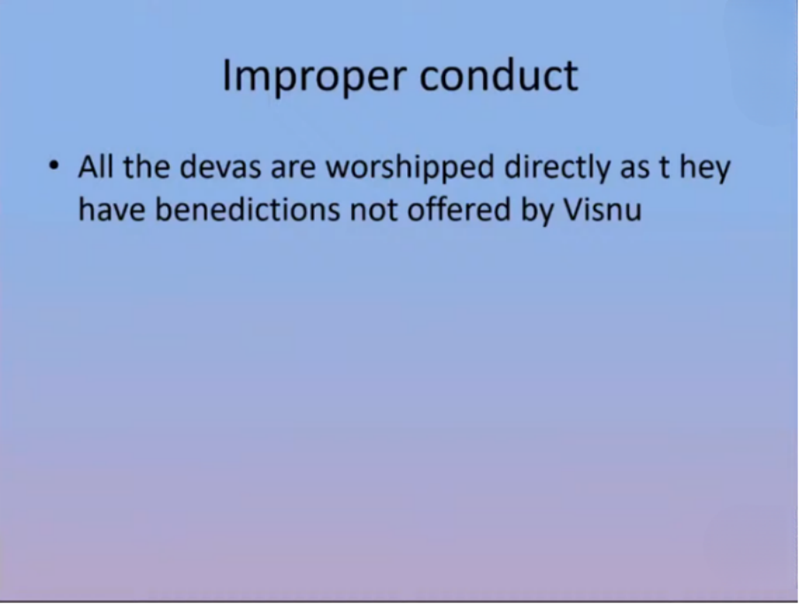
Another fault is to worship Vishnu, but think, also, I have to worship these Devatas separately, because they have different powers. So, that’s an offense, because Vishnu has all powers, and the powers of the Devatas are given by Vishnu, so we don’t have to worship them separately. If we worship the Supreme Lord, everything is satisfied. If we water the root of the tree, the leaves and the branches are satisfied. So, if we think that we have to worship all the leaves, etc., that’s a wrong misconception.
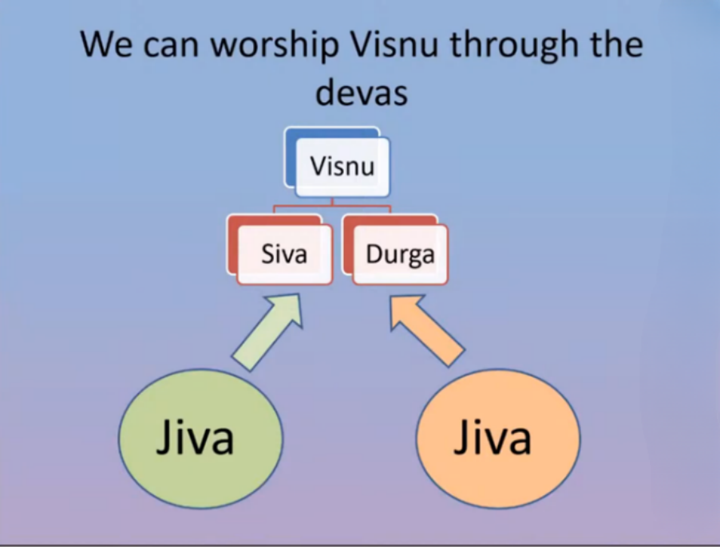
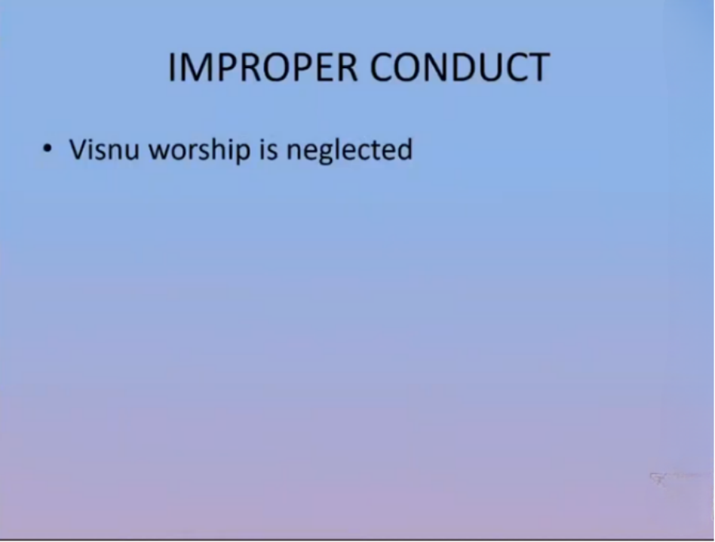
Some people may also think, okay, Shiva and Durga are servants of Vishnu, so let’s worship their devotees, let’s worship the devotees [Laughs]. Through the devotees, we get to the Supreme Lord, sounds like nice. It’s okay, yes, we should respect the Devatas, but we should not ignore the Supreme Lord in the process. So, we think, we will just worship Shiva and Durga for now, later on we can worship Vishnu, so that’s not proper also. Just like we can worship the devotees, let’s worship the devotees, later on we’ll worship Krishna [Laughs], doesn’t makes sense [Laughs]. So, we have to simultaneously recognize and worship the Supreme Lord. So, if we recognize the Devatas as servants of the Lord, fine, but then we should act properly. We should not neglect Vishnu worship.
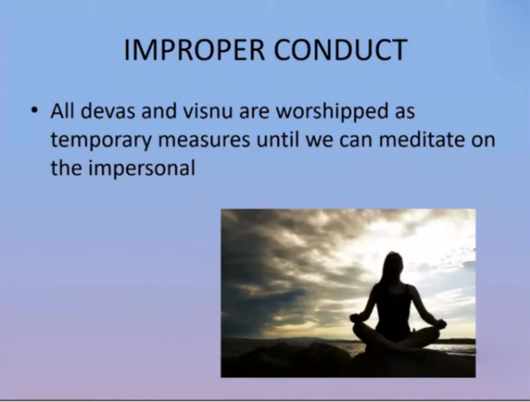
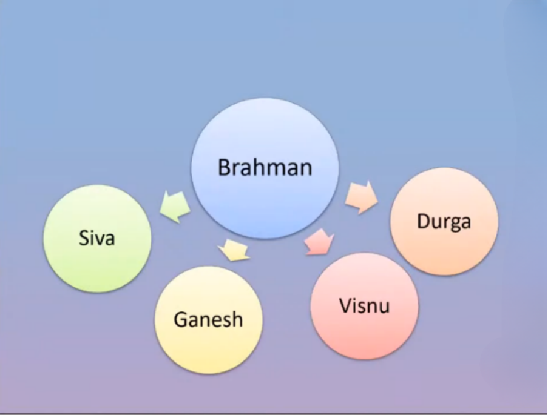
Another conception is that ultimately they’re all māyā, all the Devatas are māyā , and Vishnu is also māyā. The only reality is Brahman. So, we can worship everybody, fine, this will help us stay in sattva-guṇa but then we go beyond sattva-guṇa, we reject everybody, we emerge in Brahman, and we don’t worship anybody. So, this is the impersonal conception, that’s also wrong. So, we have to avoid all these philosophies.
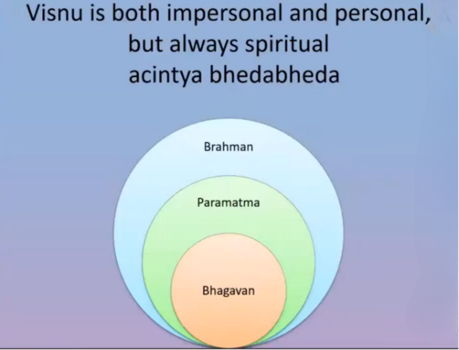
So, what is the conclusion? We have to understand that Vishnu ultimately is Brahman also, but he’s also Paramātmā , he’s also Bhagavan, so he has his personal aspect and his impersonal aspect. So, this is our acintya-bheda-abheda philosophy. Nevertheless, we avoid the impersonal because it’s incomplete, and we prefer worshipping Bhagavān. Bhagavān is complete. Brahman is one aspect of the Lord, like realizing the mountain or the hill from 20 miles away, as supposed to going to the mountain and climbing up the mountain, and we realize much more about the mountain. So, realization of Bhagavān is more details about Supreme Lord. And Brahman is like vague realization of the Lord.
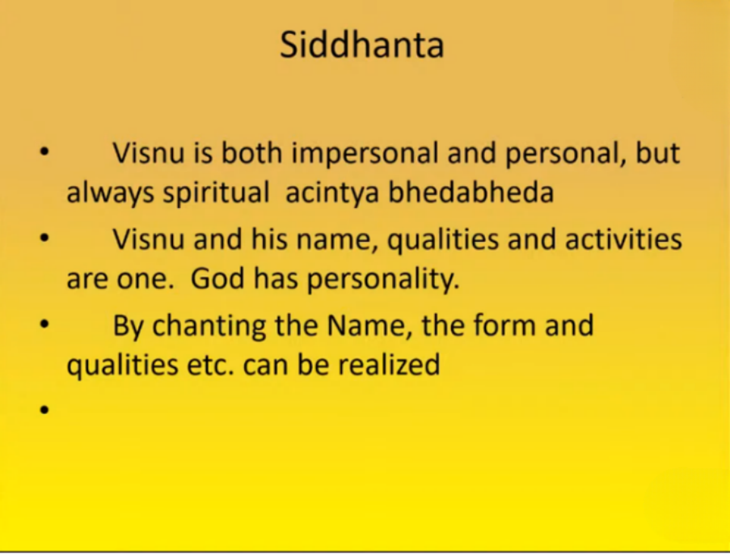
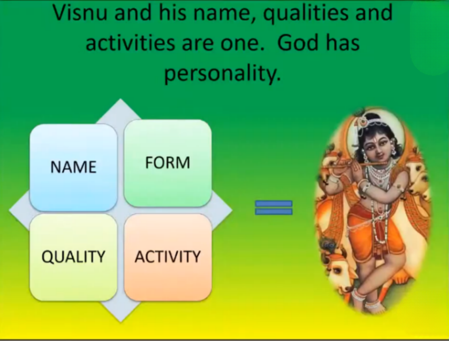
So, that Supreme entity Bhagavān has a form, his qualities, his activities, and he can also have many forms. So, we have Vishnu, and Nrsimhadeva, and Rama, and Krishna, etc. And it’s all spiritual and all these forms are actually one entity. The name is non-different from the Lord. It’s also spiritual and so, by chanting the name, we can realize, form, qualities, and activities of the Supreme Lord. So, that’s our siddhanta. And we distinguish Devatas and others from that. So, this just represents Bhagavān is there, and we expand, and we get Brahman up there, but it’s a vague realization of the Lord. We want detailed realization, we get Bhagavan.
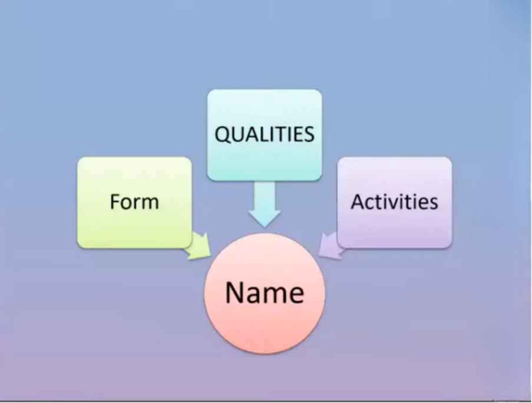
So, we can realize that Bhagavān by chanting Bhagavān’s name. We chant Vishnu’s name, we can realize Vishnu’s name, form, qualities, and activities. We chant Krishna’s name, we can realize his name, form, qualities, and activities. So, this is our particular philosophy. So, everything ultimately is included in the name. We chant the name, we can realize Krishna.
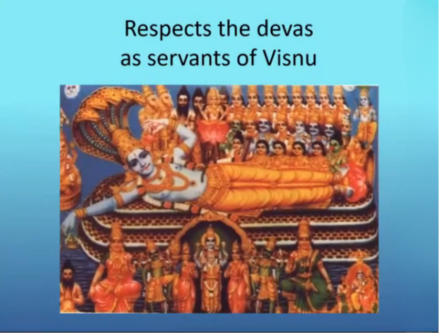
So, Devatas are respected in the Vedas, and we also don’t disrespect the Devatas. In the 64 angas of Bhakti, mentioned in Nectar of Devotion, one is, do not disrespect the Devatas. Why we don’t disrespect them is because they’re also devotees. They’re also serving Supreme Lord. And, therefore, we don’t disrespect devotees, so we respect the Devatas. But, we also understand their position. They’re all Jivas, and they’re inferior to Supreme Lord. They’re also devotees, they’re not supreme. They cannot give independent benedictions. So, during ceremonies, and whatever, and samskaras, etc., we try to just worship Vishnu or Krishna. And, we avoid worshiping Devatas and Pitrs. What we can do to respect them is to offer the prasada of Vishnu to the Devatas and the Pitrs during Shraddha ceremonies or whatever.
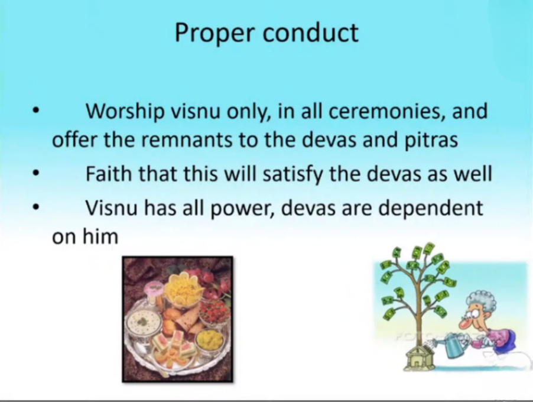
So, we have faith that by worshiping Vishnu, all the Devatas will be satisfied. And, we don’t have to do separate worship. I’ve offended the Devatas because I didn’t worship them, so I have to worship them separately. No, that’s the wrong conception. So, Supreme Lord has all powers, Devatas are dependent on him. We worship the root, everybody is satisfied. So, we can perform all the duties of Varnashram as long as to support body and family. But, and we can even respect Devatas, but we don’t worship them independently. So, in the regular Varnashrama system, they have all sorts of worships of Devatas, etc. We could do it, but recognize them as devotees only. And, understand that ultimately, everything is coming from Vishnu.
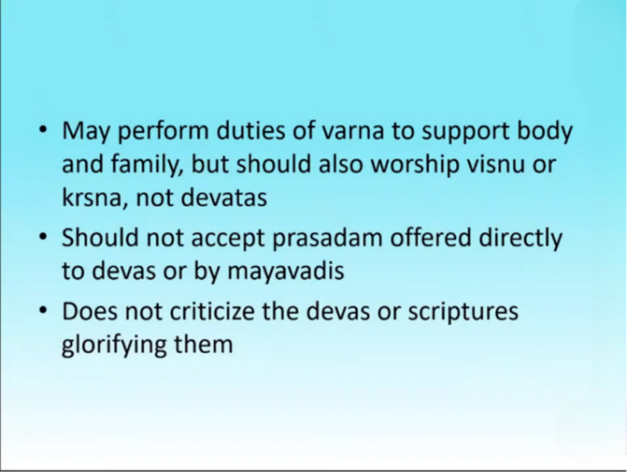
So, if people worship the Devatas separately, we shouldn’t accept that Prasada. It’s not the right Prasada [Laughs]. It’s Devata Prasada. If someone offers to the Supreme Lord, Vishnu or Krishna, then offers to the Devatas, we can accept that Prasad. It’s Prasadam from a devotee. So, because the Devatas are devotees, we do not criticize them. And also, we don’t criticize the scriptures glorifying them, because we understand this is glorification of Devatas for people that don’t have faith in the Lord, and so that we don’t want to disturb their faith. So, we let them worship, even though it may be slightly incorrect.
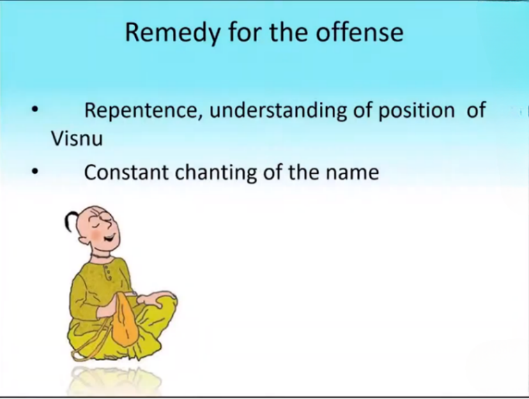
So, we respect them, Devatas as servants of the Lord. Now, if we commit this offense of equating Vishnu and Krishna with Devatas, we have to get proper knowledge, repent for our aparadha [Laughs], and come to the proper understanding of position of Supreme Lord, as opposed to Devatas and Jivas, etc., and constantly chant the holy name.
Okay, any question there?
Q & A
1) You mentioned about getting the Diksha Initiation. So, if someone’s only had that Nama Initiation, how important is it then to get that second initiation?
So, in ISKCON we have a little bit of a unique system [Laughs], which we don’t have in other Sampradayas, or even in other mutts and whatever like that. There’s this Diksha and that’s it, which is the second one. And they don’t call the first of the things as Diksha at all. But we kind of put them both into Diksha. In one sense, of course, there’s some justification for that. But the main part of the Diksha is getting the mantra, which comes in second. So, definitely without that mantra, you can’t worship the deity. So, we accept that. So, in that sense, for the Diksha, as far as deity worship, that’s the Diksha.
The first can also be called Diksha in one sense, or part of Diksha at least, because we get a name. And in Pancharatra, there is what is called Panchasamskara, or five purification nights. That’s the most important thing, getting the mantra. But along with that, we get Tilak, and we get the name, and we get the right to worship the deity. Those are the other things. So, we get the name, and that’s part of Diksha. So, we’re getting that in this, what we call first initiation. So, we can say it’s initiation part one [Laughs]. And then the mantra is initiation part two. And of course, that’s the most essential part for Diksha.
So, which is more important? Traditionally, of course, Diksha is important, and it’s emphasized in other Sampradayas, and it is a part of Pancharatric procedures. You have to take Diksha, and then you have to worship the deity. So, in Pancharatra, deity worship is your essential sadhana. In Lord Caitanya’s Sampradaya, we don’t emphasize deity worship so much as we emphasize Nama Sankirtana, which does not require Diksha [Laughs]. So, in Lord Caitanya’s Caritamrta, it says Nama, chanting the holy name, not dependent on Diksha.
And of course, that’s what we do. We tell everybody in the world to chant Hare Krishna. We don’t say get initiation to chant. So, it’s free for everybody. So, this is what Lord Caitanya emphasized more than anything. And by chanting the holy name, you can get prema.
So, without getting the other mantra. So, therefore, it acts independently. So, in that sense, if we get the holy name, this is more important than getting the mantra for deity worship. Of course, if we want to emphasize deity worship as Pancharatra, then we’ll say the second one is important. So, technically, for Diksha, it would be the important part, getting the mantras for deity worship. But as far as Lord Caitanya’s movement, this chanting the holy name is much more important. And if we get teachings along with that, that’s more important.
So, Prabhupada has made two different statements. Some people asked, so, yeah, which is more important? So, then Prabhupada said, well, second initiation, that’s real initiation. Which is true, because it’s the definition of getting mantra, etc., from scripture. But then another letter, then he said, well, first initiation is more important [Laughs]. Again, both opinions. Which is true also, because at first initiation, we’re encouraged to chant Hare Krishna 16 rounds, etc. So, that’s more important than deity worship. So, in that sense, it’s more important. So, it’s a little bit confusing for us, but as far as Lord Caitanya’s concern, that chanting holy name was important. And we don’t reject deity worship or the Diksha, because it’s also one of the five primary angas of bhakti. So, generally, most people do it.
And Lord Caitanya took Diksha. Advaita acharya took Diksha. Gadadhar took Diksha. They all took Diksha. And that’s continued within their Sampradaya to take the mantra and whatever, and do some worship of the deity, etc. So, we’ve continued.
Bhaktisiddhanta Sarasvati and Srila Prabhupada continued that tradition also. But we can’t overemphasize that as being the most important thing, because Nama. Nama Sankirtan is more important.
2) Hare Krishna. This is also in regards to guru. And I had one question that has already been answered. The second one is, you mentioned that we have to be very careful about choosing a guru in case, well, they fall down and so on. But, whichever guru we have in ISKCON presently and in the past, they’ve been scrutinized and chosen by the authority of ISKCON. So, and I was told also that you choose a guru who inspires you. So, I’m a little bit confused as to which one it is. Is it the one who inspires you?
HHBSM : [Laughs]
Devotee : Because it’s also, for me, it’s a little bit kind of, well, offensive to be thinking, oh, is this guru going to fall down in the future or not?
HHBSM : [Laughs]
Devotee : It’s like, thinking like that, for me, it’s a bit confusing. Would you like to comment on that?
HHBSM : So, we have a process in ISKCON and even some devotees challenge that process [Laughs]. Because it should be free. It’s not that some people are approved and some are not approved. That’s not historically the process that you just, you know, go out and you choose a guru and you surrender to him that’s the traditional process. Of course, the counter-argument could be that when we do have an organization, we do have to have some, let’s say, filter or whatever, so that not just anybody becomes a guru or whatever, but there should be some sort of standard we set. So, a society usually has different standards.
So, with that intent, then, the GBC has made a system, not actually approval, but non-objection [Laughs]. So, it’s not that we’re guaranteeing that this person will not fall down or this person is on a certain level of bhava or whatever. It’s not an approval of that. But as far as recommended by local devotees, senior devotees, this person has got high standards, they have knowledge, they have studied scriptures, their conduct is proper for, you know, 20 years, 30 years or whatever. So, they have, functionally, they should be respected and they can give teachings and mantra, etc. So, it’s not so much an approval as not objecting to their being a guru or whatever like that. So, that’s the present system. Now, of course, our system is a little bit unique also because most organizations have one guru [Laughs]. There’s no choice really [Laughs]. You just accept that guru and that’s it. But we have many. So, there is a choice, you could choose among the different persons like that. And what would the choice be? That’s where your individual preferences, their inspiration and also your judgment also, who you think is the most qualified or whatever. So, therefore, it’s kind of a minimum qualification as you see, but then you have to decide who you think is the most qualified in terms of their bhakti whatever plus your personal attraction and inspiration from that particular person.
3) Devotee : Question is not audible.
HHBSM : Yeah. Yeah. So, of course, where we have a one guru society that doesn’t factor in [Laughs] because there is no choice anyway [Laughs]. And if you want to, you simply surrender to that one person, whoever he is and you don’t worry about that. However, in some senses, yes, we cannot judge a person completely. Nevertheless, we do have to have some knowledge. So, we can judge who’s a devotee, who’s not a devotee and to some extent we can also judge progress. Of course, we can’t judge completely and a person who’s like a Madhyama-adhikari cannot judge who’s an Uttama or whatever, it’s impossible. But within this Madhyama category, definitely we can distinguish those who are junior, those who are senior, to some extent. Not perfect, but to some extent we can do that, if we have proper knowledge and also we get guidance from other devotees. So, generally we can make some sort of distinctions with our limited knowledge.
4) Hare Krishna Maharaj, thank you very much for the seminar. I have a question regarding yesterday and today. Today you mentioned about the Madhyama-adhikari devotee, how we get bhakti from them. And yesterday you mentioned that we get bhakti from Sadhana. So, could you clarify?
Okay. Bhakti itself is shakti of the Lord, internal shakti of the Lord coming from spiritual world, but it manifests through devotees [Laughs]. So therefore, the devotees are the cause of our advancement because they’re the ones that will teach us bhakti and give us inspiration in the bhakti. So bhakti definitely delivers us, but in most cases we’re going to get it through a devotee. So to get it through a devotee, we have to respect the devotee. We can’t criticize the devotees all the time, otherwise we can’t even get the knowledge or mercy or whatever. So we have to respect the devotees and this is the means by which we get the bhakti so we can advance in devotional service. So, advancement will be caused by mercy of devotees, plus getting that mercy we endeavour [Laughs]. So in other words, the devotees help us plant the seed of bhakti and then we have to be the gardener to make the effort to make it grow properly and then we get the instructions from gurus and devotees how to water properly, make the plant grow nicely. So it’s a combination of our efforts and our faith, plus the contribution of devotees and whatever. In some cases, of course, Krishna gives direct mercy, but that’s very rare. So the common form of mercy is through devotees.
5) Maharaj, on the screen, it was showing the difference between Kanistha, Madhyama, Uttama and the levels of chanting. So the Kanistha is chanting on the level of Nama aparadha but you mentioned…
HH Bhanu Swami Maharaj: Nāmābhāsa.
Devotee: Was it nāmābhāsa ? Because I mentioned the Madhyama is chanting on Suddha nama, I thought he would be on the level of nāmābhāsa.
HH Bhanu Swami Maharaj: [Laughs] Well [Laughs], in Nectar of Devotion the very near the very beginning is a definition of pure bhakti and then the devotee is expected to practise sadhana in pure bhakti and then that will go into bhava in pure bhakti in prema in pure bhakti. So therefore, a real devotee in sadhana should be practising pure bhakti, which also means pure name. And if we’re doing nāmābhāsa, that would be mixed bhakti or bhakti out of ignorance. So yesterday I said we remove the ignorance by knowledge. So if we read Bhagavad Gita, we can get rid of most of that ignorance. So in that sense, just by reading Bhagavad Gita even the first 20 pages [Laughs] and we believe it, then we can get rid of a lot of the nāmābhāsa . We won’t get rid of the anarthas completely, but at least if we know what the anarthas are, we can keep them minimised. So therefore we come to the level of Suddha-nama even in sadhana, near the beginning stages.
6) And also if your guru falls down and he’s rejected because not practising, it was mentioned that one needs to accept a qualified guru. As far as I understood, at least with this kind of law, that accepting another guru wasn’t actually necessary because you are already connected. Is that correct?
Yeah, so of course it doesn’t mention there Siksha or diksha either [Laughs]. And in the scriptures it says, obviously if your guru has fallen, so you reject him. So you should get some shelter or some guidance from somebody so to accept another guru doesn’t say Siksha or Diksha particularly. So the idea there is for advancement of devotional service, we should have guidance, we should accept teachings, so we should have some guru, whether it’s Siksha or Diksha. But it doesn’t say definitely you have to take the Diksha again, you should get the mantra again.
Devotee: So I know some devotees, their guru has fallen, they’re asked, who’s your guru? They just say NSM, no spiritual master.
HHBSM : [Laughs]
Devotee : So or they might say, well Prabhupada’s one of my Siksha gurus.
HH Bhanu Swami Maharaj: Yeah, there’s nothing incorrect in doing that as I said, he’s our main Siksha guru and he’s the founder acharya. So if someone says, who’s your guru? Then you could say, Prabhupada.
Devotee : [Laughs]
HH Bhanu Swami Maharaj: Well of course someone says, you’re a rittvik or whatever like that, but technically no, because you’re not saying, I got the Diksha mantra from Prabhupada, so that’s what a rittvik is. But we’re accepting as our main Siksa guru, fine, that’s also possible. And of course it is advised if one guru has fallen, then they say, take shelter of Srila Prabhupada. And before you take initiation, also they say, take shelter of Srila Prabhupada. So we’re doing that in other instances also, we’re taking shelter of Srila Prabhupada. So all along you can take shelter of Srila Prabhupada, whether guru has fallen or not. And there’s no contradiction.
7) Maharaj, in Madhyama Adhikari, you told that we have to distinguish between a Vaishnava and non-Vaishnava. And Uttama Adhikari will not distinguish between Vaishnava and non-Vaishnava. When Madhyama Adhikari want to advance to Uttama Adhikari, when he is choosing him, he feel that, oh, it is lowered or how he feels, Maharaj?
Well, it’s not a matter of choosing like that, this is like a symptom, secondary symptom that he is cultivating distinction or non-distinction. So, in the Madhyama stage, a devotee realizes that some association is bad. So we have a rule, don’t associate with non-devotees.
So the Madhyama realises that. Kanisthas don’t, Madhyamas do and it’s good for their spiritual advancement. So they associate with devotees, they don’t associate with non-devotees. They recognise we don’t preach to the faithless people, so these demons, we don’t want to preach to them, and we’ll preach to those who are receptive like the Kanisthas. So this is just a natural result of their progress in bhakti.
If a devotee advances to, through sadhana, from a Madhyama to Bhava and Prema, in that process then he realises Supreme Lord, he gets Prema, whatever, Bhava or Prema, and then he begins to see everything is suffused with Prema. And he’s concentrating on his internal pastimes with the Supreme Lord. And when he looks at the external world, he sees everything in terms of that internal world. So therefore he doesn’t make distinctions. That’s all Krishna. So even the demons are like servants of Krishna or whatever. He doesn’t make distinctions like that. So it’s simply his, due to his realisation. There are exceptions that Uttama-adhikari can also start making distinctions as we see with Narada Muni. So he’s devotee in Prema, etc. He’s a Shaktyavesha Avatara of the Lord, he’s empowered to preach bhakti, so he makes distinctions. He sees demons, he sees devotees, he preaches to the devotees. So sometimes the Uttamas also start making distinctions for preaching. Okay.
Okay. Hare Krishna.
Devotees : Hare Krishna. HH Bhanu Swami Maharaj Ki.. Jai !!